from fastai.vision.all import *Lesson 1
1.1 Classifying Cats and Dogs
What is our goal today?
- learn about the fastai framework through a vision application
- create a neural network that can distinguish between 26 different breeds of animals
- become familiar with the different sub-libraries of fastai
Let’s grab the library:
The fastai library is segmented between
- vision
- text
- tabular
- collab
spanning across each of these applications.
While this course is only focused on the first, by the end of these 7 weeks this understanding will easily be able to propagate into the other 3 applications. Since this course will be on vision, we import the vision module:
Author’s Note
This import * is an extremely bad practice in modern Python programming. This shouldn’t be done in production, and each lecture will have all of the “exact” imports for everything used as a reference to both see what you should do and understand where everything comes from.
General Deep Learning Pipeline:
flowchart TD A[Gather Data] –> B[Clean Data] B –> C[Build DataLoaders] C ==> D[Build a Learner] D ==> E[Train with modern best practices] E ==> F[Deploy] F –> A E ==> C
We’ll be focusing on a small subset of this pipeline:
flowchart TD C[“Build DataLoaders”] ==> D[“Build a Learner”] D ==> E[“Train with modern best practices”] E ==> F[“Deploy”] E ==> C
Looking at Data
Since we’re focusing on only those 4 latter, this course will rely on other curated datasets for our analysis. For today’s problem we will attempt to identify between 12 species of cats and 25 species of dogs (37 in total). 7 years ago state-of-the-art was considered 59% error.
Today, this is now < 10.
What we will try and do is build a world-class image classifier using the fastai API and achieve this in less than 10 minutes. First we need this dataset. fastai has a data class to do so, through something called untar_data. If we call help on untar_data, we can see it’s documentation description:
help(untar_data)Help on function untar_data in module fastai.data.external:
untar_data(url: 'str', archive: 'Path' = None, data: 'Path' = None, c_key: 'str' = 'data', force_download: 'bool' = False, base: 'str' = '~/.fastai') -> 'Path'
Download `url` using `FastDownload.get`
The first thing you may notice is this doesn’t say much. To get a bit better of a description you can rely on a framework called nbdev (what fastai is built upon), which enables their special documentation-writing schema to appear when asking for more information:
untar_data
untar_data (url:str, archive:pathlib.Path=None, data:pathlib.Path=None, c_key:str=‘data’, force_download:bool=False, base:str=‘~/.fastai’)
Download url using FastDownload.get
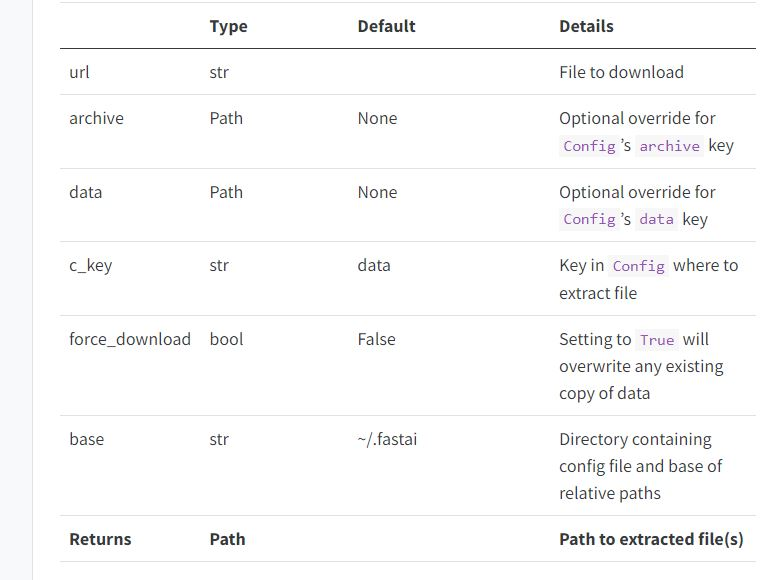
fastai has a few preset datasets stored in a set of URLs. For our problem this lives in PETS, which contains the Oxford Pets dataset. This dataset is designed around identifying cats and dogs by species. Let’s download the dataset:
path = untar_data(URLs.PETS)And set our seed to ensure we have reproduceability:
set_seed(42)How is our data setup?
path.ls()[:3](#2) [Path('/home/stephen137/.fastai/data/oxford-iiit-pet/annotations'),Path('/home/stephen137/.fastai/data/oxford-iiit-pet/images')]Seperated between images and annotations
(path/'images').ls()[:3](#3) [Path('/home/stephen137/.fastai/data/oxford-iiit-pet/images/Birman_115.jpg'),Path('/home/stephen137/.fastai/data/oxford-iiit-pet/images/leonberger_142.jpg'),Path('/home/stephen137/.fastai/data/oxford-iiit-pet/images/Bombay_68.jpg')]Let’s build a DataLoaders. First we’ll need the path to our data, some filenames, and the regex pattern to extract our labels:
path = untar_data(URLs.PETS)
fnames = get_image_files(path/'images')
pat = r'(.+)_\d+.jpg$'Some basic transforms for getting all of our images the same size (item_tfms), and some augmentations and Normalization to be done on the GPU (batch_tfms)
item_tfms = RandomResizedCrop(460, min_scale=0.75, ratio=(1.,1.))
batch_tfms = [*aug_transforms(size=224, max_warp=0), Normalize.from_stats(*imagenet_stats)]
bs=64
This has to be done because images must be the same size before they can be pushed to the GPU and have these augmentations be applied.
1.2 What is the fastai Application Programming Interface (API)?
Consists of three API levels:
DataLoaders - Highest level of the API, but not much flexibility
DataBlock - medium level API (debateable) - medium flexibility - building blocks of the framework - what we will focus on
Pipeline and Datasets - lowest Level - highest Flexibility - hardest to learn due to so much magic - consists of the “groundwork” for all the other wrappers
Vision
- PILBase
- PILImage
- PILImageBW
- PILMask
- TensorPoint
- TensorBBox
- LabelBBox
- PointScaler
- BBoxLabeler
Tabular
- Tabular
Text
- TensorText
- LMTensorText
- Tokenizer
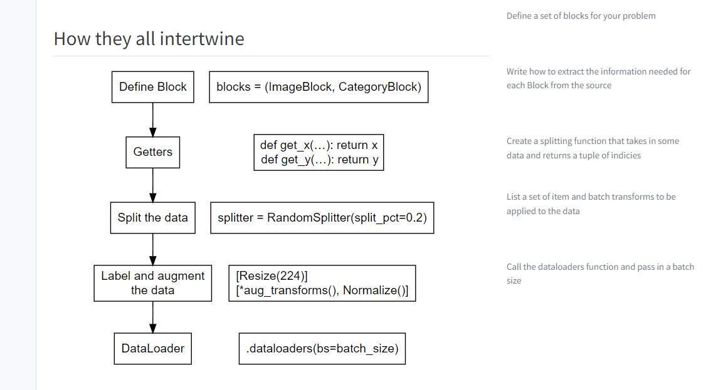
What are our options?
Getters and number of inputs - get_x - get_y - get_items - n_inp
Splitting the data - ColSplitter - EndSplitter - FileSplitter - FuncSplitter - GrandparentSplitter - IndexSplitter - MaskSplitter - RandomSplitter - RandomSubsetSplitter - TrainTestSplitter
Labelling the data - Categorize - ColReader - MultiCategorize - RegexLabeller - RegressionSetup - parent_label
Building some DataLoaders
When we are ready to create our DataLoaders, we pass in the items to use, a batch_size, and the transforms to be performed to the DataLoader constructor:
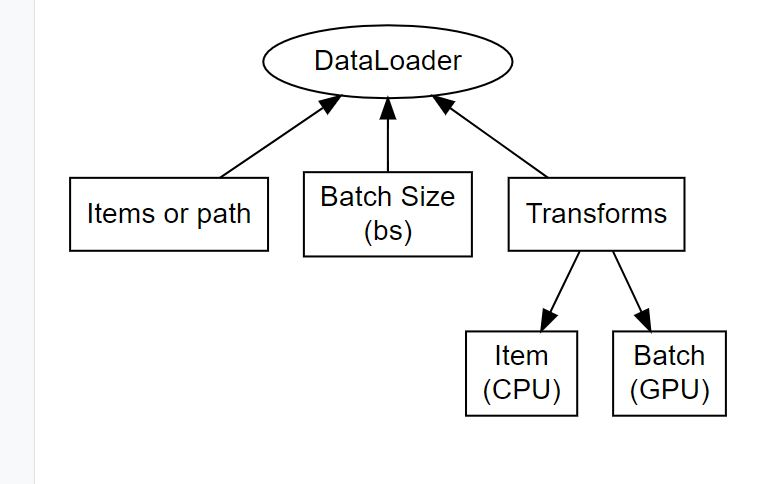
Why are Item and Batch Transforms handled differently?
Item transforms are happened first and are used to prepare a batch. This includes transformations such as converting to a torch.tensor, ensuring that images, text, or tabular data can be collated together (the same size/shape).
Batch transforms are performed on an entire subset of data (after they have all been through the item transforms) at once as a big matrix. Examples can include further resizing, normalizing the data, and other data augmentation. As a result they are multitudes faster.
Back to DataLoaders
dls = ImageDataLoaders.from_name_re(
path, # The location of the data
fnames, # A list of filenames
pat, # A regex pattern to extract the labels
item_tfms=item_tfms, # Transform augmentations to be applied per item
batch_tfms=batch_tfms, # Transform augmentations to be applied per batch
bs=bs # How many examples should be drawn each time
)Let’s rebuild using the DataBlock API, which explains a bit more of the magic occurring. We’ll need to define:
- what our input and outputs should be (An Image and a Category for classification)
- how to get our items
- how to split our data
- how to extract our labels
- and our augmentation
as before:
pets = DataBlock(blocks=(ImageBlock, CategoryBlock),
get_items=get_image_files,
splitter=RandomSplitter(),
get_y=RegexLabeller(pat = r'/([^/]+)_\d+.*'),
item_tfms=item_tfms,
batch_tfms=batch_tfms)path_im = path/'images'dls = pets.dataloaders(path_im, bs=bs)We can take a look at a batch of our images using show_batch, pass in a maximum number of images to show, and how large we want to view them as:
dls.show_batch(max_n=9, figsize=(6,7))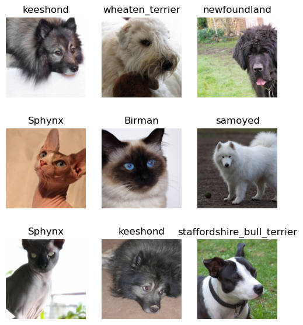
If we want to see how many classes we have, and the names of them we can simply call dls.vocab. The first is the number of classes, the second is the names of our classes. This is another special wrapper class, think of it as a special list of sorts, called L.
dls.vocab['Abyssinian', 'Bengal', 'Birman', 'Bombay', 'British_Shorthair', 'Egyptian_Mau', 'Maine_Coon', 'Persian', 'Ragdoll', 'Russian_Blue', 'Siamese', 'Sphynx', 'american_bulldog', 'american_pit_bull_terrier', 'basset_hound', 'beagle', 'boxer', 'chihuahua', 'english_cocker_spaniel', 'english_setter', 'german_shorthaired', 'great_pyrenees', 'havanese', 'japanese_chin', 'keeshond', 'leonberger', 'miniature_pinscher', 'newfoundland', 'pomeranian', 'pug', 'saint_bernard', 'samoyed', 'scottish_terrier', 'shiba_inu', 'staffordshire_bull_terrier', 'wheaten_terrier', 'yorkshire_terrier']In a more pythonic-fashion, the vocab also has an o2i (object to index) we can utilize instead:
dls.vocab.o2i{'Abyssinian': 0,
'Bengal': 1,
'Birman': 2,
'Bombay': 3,
'British_Shorthair': 4,
'Egyptian_Mau': 5,
'Maine_Coon': 6,
'Persian': 7,
'Ragdoll': 8,
'Russian_Blue': 9,
'Siamese': 10,
'Sphynx': 11,
'american_bulldog': 12,
'american_pit_bull_terrier': 13,
'basset_hound': 14,
'beagle': 15,
'boxer': 16,
'chihuahua': 17,
'english_cocker_spaniel': 18,
'english_setter': 19,
'german_shorthaired': 20,
'great_pyrenees': 21,
'havanese': 22,
'japanese_chin': 23,
'keeshond': 24,
'leonberger': 25,
'miniature_pinscher': 26,
'newfoundland': 27,
'pomeranian': 28,
'pug': 29,
'saint_bernard': 30,
'samoyed': 31,
'scottish_terrier': 32,
'shiba_inu': 33,
'staffordshire_bull_terrier': 34,
'wheaten_terrier': 35,
'yorkshire_terrier': 36}Time to make and train a model!
We will be using a convolutional neural network backbone and a fully connected head with a single hidden layer as our classifier. Don’t worry if thats a bunch of nonsense for now. Right now, just know this: we are piggybacking off of a model to help us classify images into 37 categories.
Modern applied computer vision never starts from scratch. Instead we utilize a technique called transfer learning. Let someone else with much more compute than you build a state-of-the-art model, then piggyback off of this trained model for your own custom datasets.
In practice, this requires removing the last layer of the model and restructuring it to your problem.
Most commonly this comes in the form of a model trained on the ImageNet dataset (1,000 classes) and then downstreaming it to your own problem (37 classes).
To do so, we need 5 requirements:
- DataLoaders
- some architecture
- an evaluation metric
- a loss function
- an optimizer
The fastai library will then wrap all of these items needed for training into the Learner. Oftentimes these don’t need to specified, as defaults are carefully picked out to have excellent performance right away.
Each module has their own **_learner** function that returns a Learner to facilitate training. Since we have a vision problem we utilize the cnn_learner (convolutional). With these defaults, we also only need to pass in the DataLoaders, a model architecture, and the metric:
learn = vision_learner(dls, resnet34, metrics=error_rate)/home/stephen137/mambaforge/lib/python3.10/site-packages/torchvision/models/_utils.py:208: UserWarning: The parameter 'pretrained' is deprecated since 0.13 and will be removed in 0.15, please use 'weights' instead.
warnings.warn(
/home/stephen137/mambaforge/lib/python3.10/site-packages/torchvision/models/_utils.py:223: UserWarning: Arguments other than a weight enum or `None` for 'weights' are deprecated since 0.13 and will be removed in 0.15. The current behavior is equivalent to passing `weights=ResNet34_Weights.IMAGENET1K_V1`. You can also use `weights=ResNet34_Weights.DEFAULT` to get the most up-to-date weights.
warnings.warn(msg)
resnet34
This is a very common machine learning model to start with hosted by torchvision. Much like the example earlier it was trained on the ImageNet dataset of 1,000 classes.
error_rate
Our problem is graded by “amount wrong”, which takes the form of the error_rate metric.
Some assumptions being made here:
- loss function is assumed as classification, so CrossEntropyFlat is used
- optimizer defaults to the AdamW optimizer, a commonly used optimizer that has been considered as a good starting place in the Deep Learning community for the past few years
With this now, we can train the model.
There’s a variety of “fit” functions fastai provides, each with their own set of hyperparameters to train a model. Generally fit_one_cycle (the One Cycle policy) or fit_flat_cos (Consine Annealing) are the best methods of training, which fastai simplifies to a simple one-line function:
learn.fit_one_cycle(4)Afterwards we can save the model weights:
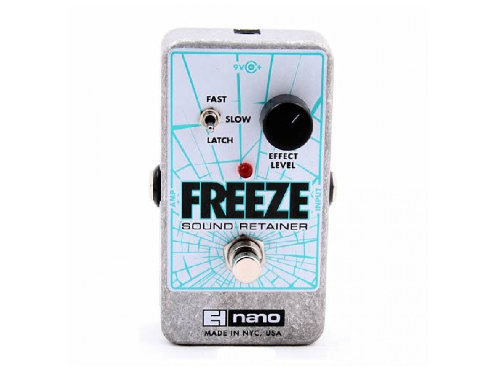
learn.save('stage_1')Path('models/stage_1.pth')Analyzing how the model performed
With the model trained, the next step in the feedback loop is looking at where it messed up. What species did it have trouble differentiating between? So long as the misidentifications are not too bad, our model is actually working.
What counts as being “too bad” is never an exact science, often when working on problems a deep learning engineer should be paired with an expert in the respective problem field so that these analysis have the proper context
We can plot our losses and make a confusion matrix to visualize these through the ClassificationInterpretation interface:
interp = ClassificationInterpretation.from_learner(learn)plot_top_losses needs x number of images to examine, and a figure size:
interp.plot_top_losses(9, figsize=(15,10))plot_confusion_matrix just needs a figure size. dpi adjusts the quality:
interp.plot_confusion_matrix(figsize=(12,12), dpi=60)We can also directly grab our most confused (A raw version of the confusion matrix), and pass in a threshold:
interp.most_confused(min_val=3)Unfreezing our data, fine-tuning, and our learning rates
So, we have the model. Let’s fine tune it. First, we need to load our model back in:
learn.load('stage_1');Now we will unfreeze and train more:
learn.unfreeze()Now when we unfreeze, we unfreeze all the layers. To find a proper new learning rate we can use the learning rate finder to help:
learn.lr_find()Alright so if we look here, we don’t start really spiking our losses until ~10^-2 so a good spot is between 1e-6 and 1e-4. We can pass this in as a maximum learning rate:
learn.fit_one_cycle(4, lr_max=slice(1e-6, 1e-4))| epoch | train_loss | valid_loss | error_rate | time |
|---|---|---|---|---|
| 0 | 0.254449 | 0.195619 | 0.067659 | 07:37 |
| 1 | 0.230073 | 0.179268 | 0.058187 | 07:40 |
| 2 | 0.193608 | 0.179975 | 0.061570 | 07:38 |
| 3 | 0.190089 | 0.177946 | 0.061570 | 07:36 |
We can see that picking a proper learning rate can help achieve a lower error rate and train a better model.
learn.save('stage_2')Path('models/stage_2.pth')1.3 Custom Datasets with Kaggle
So far, we’ve learned how to:
- load some data in
- create a basic DataBlock
- create a cnn_learner
- train a model
Let’s now apply this to a non-fastai dataset, the Clothing dataset.
Let’s download the dataset
To download the dataset, you will need kaggle installed and have a kaggle.json stored in ~/.kaggle. You can get your token by going to Your Profile -> Account -> Create New API Token. If you don’t have a Kaggle account, you can make one for free here.
!pip install kaggle >> /dev/nullAnd run the API command provided:
!kaggle datasets download -d agrigorev/clothing-dataset-fullclothing-dataset-full.zip: Skipping, found more recently modified local copy (use --force to force download)It’s now been saved to the clothing-dataset-full.zip file here on our local system:
from fastcore.xtras import Path
zip_path = Path("clothing-dataset-full.zip")
zip_path.exists()TrueLet’s go ahead and unzip this with zipfile:
import zipfile
with zipfile.ZipFile(zip_path, "r") as zip_ref:
zip_ref.extractall("data")
Code explanation
with zipfile.ZipFile(zip_path, 'r'):This is a context manager pointing at our zip_path and opens it as a data stream to read in from.
Code explanation
zip_ref.extractall(data)This will extract all of our data into a new directory ‘data’.
Let’s look in the folder:
data_path = Path("data")
data_path.ls()(#3) [Path('data/images_original'),Path('data/images_compressed'),Path('data/images.csv')]
Code explanation
data_path.ls()fastcore adds a number of monkey-patch improvements to existing classes, which is why we imported from fastcore.xtras import Path and not from pathlib import Path. Being able to run ls() using a Path is one of the perks.
We see a file named images.csv, compressed folder, and original images.
Exploring the dataset
The first thing a good Data Scientist should do is look at the data. Especially when we want to fit it into the fastai framework. Let’s first investigate these compressed vs original images.
Images
We’ll import the vision library from fastai so that we have some useful imports already existing for us:
from fastai.vision.all import *Next let’s look at the folder’s contents:
(data_path/"images_compressed").ls()[:3](#3) [Path('data/images_compressed/41aa66b1-debe-4669-aa91-a117d0a83519.jpg'),Path('data/images_compressed/7ead4877-766e-4b71-ae4b-151f26d320e2.jpg'),Path('data/images_compressed/7e3b9ab4-5fa2-4f6f-b6e3-db65bca8acaa.jpg')]
Code explanation
data_path/images_compressed).ls() When you want to use a function that is determinstic by the output of whatever came before it, you can wrap it in parenthesis and call the subsequent class’ function afterwards, kind of like PEMDAS.
As expected, a variety of images. Let’s open one up and look at it:
im_path = (data_path/"images_compressed").ls()[0]
im = Image.open(im_path)
im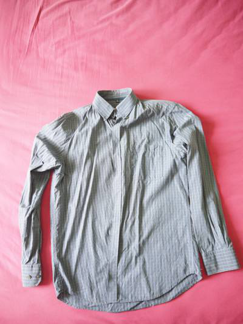
We can also check it’s size:
im.shape(533, 400)Let’s see how that compares to a bigger sized image:
im_path = (data_path/"images_original").ls()[0]
im = Image.open(im_path);im.shape(4000, 3000)Way bigger. We’ll train on the smaller dataset so it’s faster.
Now that we know how the images are laid out, we need to understand how the data is labeled.
DataFrame
We’ll load the csv file we saw with pandas:
df = pd.read_csv('data/images.csv')
df.head()| image | sender_id | label | kids | |
|---|---|---|---|---|
| 0 | 4285fab0-751a-4b74-8e9b-43af05deee22 | 124 | Not sure | False |
| 1 | ea7b6656-3f84-4eb3-9099-23e623fc1018 | 148 | T-Shirt | False |
| 2 | 00627a3f-0477-401c-95eb-92642cbe078d | 94 | Not sure | False |
| 3 | ea2ffd4d-9b25-4ca8-9dc2-bd27f1cc59fa | 43 | T-Shirt | False |
| 4 | 3b86d877-2b9e-4c8b-a6a2-1d87513309d0 | 189 | Shoes | False |
pd.read_csv
We are reading in a CSV file, so we use the pandas (pd) read_csv constructor and pass in the path.
Code explanation
df.head()head will print the first n rows of a pandas DataFrame. By default it’s 5.
We can see the label and image columns, which correspond to our data, but something doesn’t look right does it. That “Not sure” label. Let’s see how many there are:
len(df[df["label"] == "Not sure"]), len(df)(228, 5403)
Code explanation
df[label]This first part returns a mask of where the condition is met, think an array of True or False.
Code explanation
df[...]This next part indexes into the array based on the mask inside of it, everywhere “label” was “Not sure”.
A good chunk of our data is messy! We should drop those rows. To select the inverse of a mask, use the ~:
len(df[~(df["label"] == "Not sure")])5175clean_df = df[~(df["label"] == "Not sure")]
clean_df.head()| image | sender_id | label | kids | |
|---|---|---|---|---|
| 1 | ea7b6656-3f84-4eb3-9099-23e623fc1018 | 148 | T-Shirt | False |
| 3 | ea2ffd4d-9b25-4ca8-9dc2-bd27f1cc59fa | 43 | T-Shirt | False |
| 4 | 3b86d877-2b9e-4c8b-a6a2-1d87513309d0 | 189 | Shoes | False |
| 5 | 5d3a1404-697f-479f-9090-c1ecd0413d27 | 138 | Shorts | False |
| 6 | b0c03127-9dfb-4573-8934-1958396937bf | 138 | Shirt | False |
Great! Now let’s see what our classes are:
clean_df["label"].unique(), len(clean_df["label"].unique())(array(['T-Shirt', 'Shoes', 'Shorts', 'Shirt', 'Pants', 'Skirt', 'Other',
'Top', 'Outwear', 'Dress', 'Body', 'Longsleeve', 'Undershirt',
'Hat', 'Polo', 'Blouse', 'Hoodie', 'Skip', 'Blazer'], dtype=object),
19)
Code explanation
.unique()This will list out all the unique classes in our DataFrame.
Much like our PETs classification problem, we’ll be classifying 19 different clothing items.
Can we do fastai already?
So let’s go over what we know again:
- Our data is stored in folders named “images_compressed”
- To get the label from an image, we need to read it in through a pandas DataFrame
- There are 19 different clothing items we’re trying to classify.
Now that our problem is setup, let’s see how it can fit into the DataBlock API:
blocks = (ImageBlock, CategoryBlock)
Code explanation
(ImageBlock, CategoryBlock)This problem has an image going in, and a category going out.
Then how to get our data:
get_x = ColReader("image", pref=(data_path/"images_compressed"), suff=".jpg")
get_y = ColReader("label")
Code explanation
ColReader(label)We utilize the ColReader class here, which knows to read in from a Pandas column.
Code explanation
ColReader(... pref=.., suff=..)add it in on the fly rather than having to mess with the DataFrame.
Next our Transforms:
item_tfms = [Resize(224)]
batch_tfms = [*aug_transforms(), Normalize.from_stats(*imagenet_stats, cuda=False)]And finally build our DataBlock:
dblock = DataBlock(
blocks=blocks,
get_x=get_x,
get_y=get_y,
item_tfms=item_tfms,
batch_tfms=batch_tfms
)All that’s left is to convert them to dataloaders:
dls = dblock.dataloaders(clean_df, device="cpu")dls.show_batch()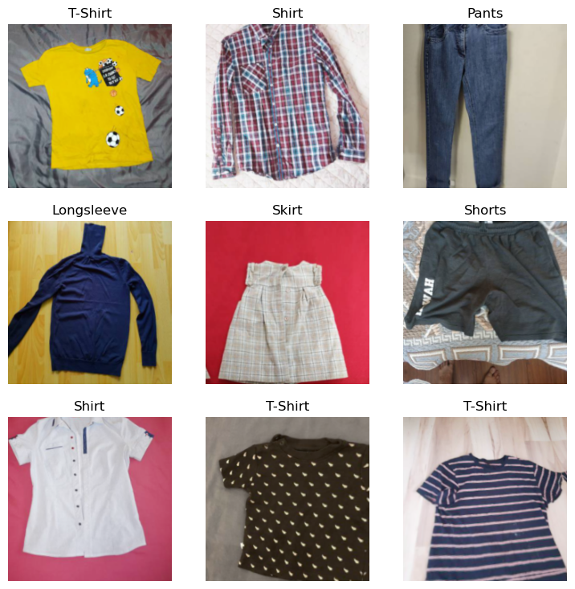
Great! Our data looks good to train on.
Creating a Learner and fine-tuning
Now let’s create the vision_learner and fine-tune:
learn = vision_learner(dls, resnet34, metrics=accuracy)
learn.fine_tune(5)
cnn_learner has been deprecated
Use vision_learner instead.
And we’re done! In the next section we’ll look at the low-level API with MNIST, building a model from scratch, and start to peel away some of the layers of fastai and think of it more as an extension to PyTorch.
Lesson 2
2.1 Low-Level API with MNIST
Introduction
In the previous lesson we saw how the fastai API is built and applied it to classify Cats and Dogs as well as on a real Kaggle dataset. In this lesson we’re going to go back to some Machine Learning basics and use the lowest-level API of fastai to train a hand-written digit classifier!
As this is a vision problem, we will import the vision library:
from fastai.vision.all import *Working with the data
The dataset for today is the MNIST handwritten digits dataset. It contains digits written from 0 -> 9 on an image.
Let’s download the data:
path = untar_data(URLs.MNIST); path, path.ls()(Path('/home/stephen137/.fastai/data/mnist_png'),
(#2) [Path('/home/stephen137/.fastai/data/mnist_png/training'),Path('/home/stephen137/.fastai/data/mnist_png/testing')])We can see it downloaded it to a folder called mnist_png and has two folders, training and testing. Let’s grab all the images from these directories:
We actually call get_image_files this time, and it brings us all of the images in both the testing/ and training/ folders.
items = get_image_files(path)
items[:10](#10) [Path('/home/stephen137/.fastai/data/mnist_png/training/4/47823.png'),Path('/home/stephen137/.fastai/data/mnist_png/training/4/45709.png'),Path('/home/stephen137/.fastai/data/mnist_png/training/4/49105.png'),Path('/home/stephen137/.fastai/data/mnist_png/training/4/746.png'),Path('/home/stephen137/.fastai/data/mnist_png/training/4/13451.png'),Path('/home/stephen137/.fastai/data/mnist_png/training/4/54187.png'),Path('/home/stephen137/.fastai/data/mnist_png/training/4/30554.png'),Path('/home/stephen137/.fastai/data/mnist_png/training/4/30886.png'),Path('/home/stephen137/.fastai/data/mnist_png/training/4/52580.png'),Path('/home/stephen137/.fastai/data/mnist_png/training/4/38515.png')]Next we need to try opening an image. Last time we used PIL.Image directly, this time we will use the fastai API:
im = PILImageBW.create(items[0])
Code explanation
PILImageThis is the main image class that handles opening the image and setting it up to be used in the fastai data framework.
Code explanation
PILImageBWWe have a black and white image (two channel), so we need to open it through the black and white specific PILImage class.
Code explanation
.create()This is the class constructor that will create a new PILImageBW object from whatever is passed in.
im.show()<AxesSubplot: >
Code explanation
.show()We want to visually plot the data to the screen, and most of the lowest level data API’s contain a show functionality to do so.
Next we need to figure out how to split the dataset. Since our data is split by testing and training folders, the GrandparentSplitter is the one we want:
splitter = GrandparentSplitter(
train_name="training",
valid_name="testing",
)
Code explanation
train_name="training", valid_name="testing",This splitter works by passing in the folder for the training dataset and the test dataset, and we assume that it’s possible to extract the labels from them seperately (as splits and labelling are two seperate stages)
As the name implies, splitters are designed to be applied to some list of data so let’s do that:
splits = splitter(items)
splits[0][:5], splits[1][:5]([0, 1, 2, 3, 4], [60000, 60001, 60002, 60003, 60004])splits[0] correlates to our training dataset and splits[1] correlates to our validation set. If you write a custom splitter or splits technically you can have n split datasets!
len(splits[0]), len(splits[1])(60000, 10000)We can see the train dataset has 60,000 items and our validation has 10,000
The next step is to build a Datasets object. This is fastai’s equivalent to a torch.data.Dataset object and handles seperating out items into different lists, creating said dataset based on the inputs passed in, and so forth:
dsrc = Datasets(
items,
tfms=[[PILImageBW.create], [parent_label, Categorize]],
splits=splits
)
Code explanation
DatasetsThe datasets object needs to take in some items that count as our dataset, how to open them, and how to split them.
Code explanation
tfmsThese are directions on transforms to be applied to each object that is returned from one item.
Code explanation
[parent_label, Categorize]This is how we label our data (or the y). parent_label looks at the parent folder for the name, and Categorize will perform label encoding.
Code explanation
splits = splitsFinally these are our splits generated earlier based on the GrandparentSplitter.
To take a look at an item in the dataset, fastai has a function called show_at which takes an datasource and an index and tries to view it:
show_at(dsrc.train, 3);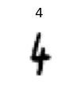
Code explanation
dsrc.trainThe training dataset.
Code explanation
3 The fourth item in the dataset.
We can see that the data is a number 4 with a label of 4. Next we need to transform the data into something we can train on. Remember the role of item transforms were to get the image to the same size, and we also need to turn this data into a PyTorch tensor.
The transforms to do so are:
item_tfms = [CropPad(34), RandomCrop(size=28), ToTensor()]
Code explanation
CropPad(34)This will either crop or pad the image to a particular size.
Code explanation
RandomCrop(size=28)This will randomly take a 28x28 pixel chunk of the image and crop to that.
Code explanation
ToTensor()This is what will convert our PILImage into a TensorImage.
As they are item transforms, these will be cpu bound. Now that the data is all the same size, we can perform the batch transforms, which should convert the data into a float tensor (to be computationally efficient) and normalize the data:
When we call Normalize without giving it any statistics, it will base the normalization values on the first batch of data in the dataset. This has generally been found to give a very good approximiation of the full dataset’s values
batch_tfms = [IntToFloatTensor(), Normalize()]
Code explanation
IntToFloatTensorThis will convert tensors from integers to floats.
Code explanation
NormalizeThis will perform normalization on the data and make training a bit faster.
And the last step is to turn them into a set of training and validation dataloaders by passing in all of our information. Since the data is so small we can use a larger batch size:
dls = dsrc.dataloaders(
bs=128,
after_item=item_tfms,
after_batch=batch_tfms
)
About after_item and after_batch
When outside the DataBlock API, item_tfms and batch_tfms will always be referenced as after_item and after_batch, including inside the dataloader itself.
Then we can show a batch of data with augmentations performed:
dls.show_batch()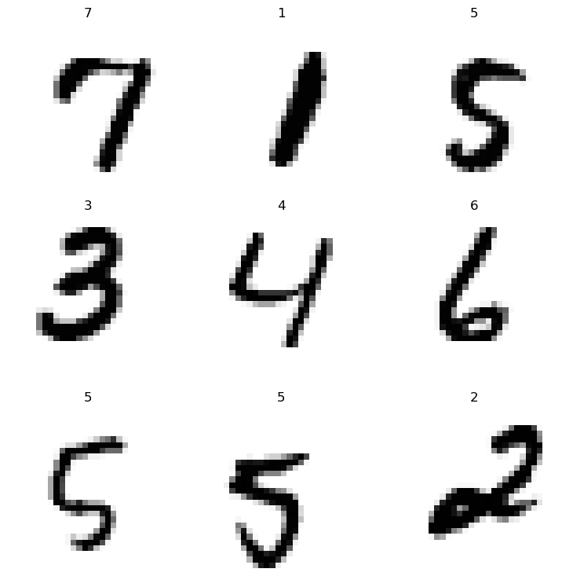
From here we can get the raw values from a single batch of data through the one_batch function:
xb, yb = dls.one_batch()
Code explanation
xbxb denotes a batch of the x’s (inputs)
Code explanation
ybyb denotes a batch of the y’s (labels)
We can view the shapes of the data:
xb.shape, yb.shape(torch.Size([128, 1, 28, 28]), torch.Size([128]))Remember a torch tensor is an array of some shape. So our x’s are 128 different arrays of shape 28x28 pixels, and our y’s are a single array of 128 numbers
Lastly we can see that fastai was able to automatically calculate the number of different y’s we had (classes) in the training dataset and throws them into an attribute called c:
dls.c10The dataset also had this, try running dsrc.c.
dsrc.c10Building a Model and Training!
Next we’ll follow what we did in the previous lesson and grab a model to use. For this particular problem we’ll use a resnet18 architecture and fastai’s cnn_learner. We won’t use a pretrained model however this time!
Why should we not use a pretrained model?
First, we used a different normalization schema earlier rather than .from_stats. Second, think about it. Are handwritten digits the same as ImageNet in any way? Not really. So it’s better to use a completely random model here for this small problem.
# Note - I removed .cuda()
model = resnet18( num_classes=dls.c); model.fcLinear(in_features=512, out_features=10, bias=True)This changed our outputs to be the number of classes, but is this enough?
model(xb)RuntimeError: Given groups=1, weight of size [64, 3, 7, 7], expected input[128, 1, 28, 28] to have 3 channels, but got 1 channels instead
Basically what this error tells us is the first layer of the model is expecting a three channel image, and we gave it a single channel instead. Which makes perfect sense! Let’s look at that first layer to see what it looks like:
model.conv1Conv2d(3, 64, kernel_size=(7, 7), stride=(2, 2), padding=(3, 3), bias=False)In order for our model to work well, we need a Conv2d layer that can work on single channel images, but is roughly the same size. We can achieve this by just reducing that 3 to 1:
model.conv1 = nn.Conv2d(
in_channels=1,
out_channels=64,
kernel_size=(7,7),
stride=(2,2),
padding=(3,3),
bias=False
)And now we can see it works!
model(xb)TensorImageBW([[ 0.0836, -0.9386, -0.5319, ..., -0.0669, 0.2010, -0.4584],
[ 0.4728, -0.6382, 0.1301, ..., -0.2985, 0.5969, -0.3663],
[ 0.5367, -0.8538, -0.2605, ..., -0.2483, -0.8470, 0.2892],
...,
[ 0.1610, -0.4887, 0.2123, ..., 0.1796, -0.2528, -0.5856],
[ 0.6665, 0.8018, 0.1648, ..., 0.4285, 0.9411, -0.3710],
[ 0.8392, -0.1051, -0.2099, ..., 0.5784, 0.6314, -0.4225]],
grad_fn=<AliasBackward0>)
What if we used a pretrained model?
If we used a pretrained model here, it is possible to utilize the old pretrained weights. We can do so by averaging each channel’s weights and having the single channel’s weights be the result:
model.conv1.weight.mean(dim=1).unsqueeze(1)
We would find this would give a weight equal to shape [64, 1, 7, 7], the size of our new Conv2D layer
All that’s left is to build a Learner (the base class of what we used last lesson) and train!
learn = Learner(dls, model, metrics=[accuracy])learn.fit(1)| epoch | train_loss | valid_loss | accuracy | time |
|---|---|---|---|---|
| 0 | 0.111420 | 0.107162 | 0.965700 | 03:40 |
Great! We successfully built a model that can classify handwritten digits! We can predict on one of them using fastai’s predict method:
items[0]Path('/home/stephen137/.fastai/data/mnist_png/training/4/47823.png')preds = learn.predict(items[0]); preds('4',
tensor(4),
tensor([2.3806e-09, 5.8144e-08, 9.9924e-07, 1.8630e-08, 9.9987e-01, 3.7552e-08,
1.6265e-06, 1.0739e-04, 7.9393e-06, 1.0025e-05]))
Code explanation
'4'This four is the string representation of the class, found in dls.vocab.
Code explanation
tensor(4)This is the argmax (or what index had the highest value) of the predictions, and it is then used as the index into dls.vocab.
Code explanation
tensor([2.3806e-09, 5.8144e-08, 9.9924e-07, 1.8630e-08, 9.9987e-01, 3.7552e-08,1.6265e-06, 1.0739e-04, 7.9393e-06, 1.0025e-05]))These are the softmax (or taking all the outputs and making them sum to one) probabilities for each class. The argmax is the highest value from here.
To recreate what we just did without learn.predict it would look something like so:
dl = learn.dls.test_dl(items[:1])
inps, preds, _, decoded_preds = learn.get_preds(dl=dl, with_decoded=True, with_input=True)
image, class_prediction = learn.dls.decode_batch((inps,) + tuplify(decoded_preds))[0]class_prediction, decoded_preds('4', tensor([4]))And finally to do it with just fastai transforms:
learn.dls.after_item, learn.dls.after_batch(Pipeline: CropPad -- {'size': (34, 34), 'pad_mode': 'zeros'} -> RandomCrop -- {'size': (28, 28), 'p': 1.0} -> ToTensor,
Pipeline: IntToFloatTensor -- {'div': 255.0, 'div_mask': 1} -> Normalize -- {'mean': None, 'std': None, 'axes': (0, 2, 3)})learn.dls.after_batch[1].mean, learn.dls.after_batch[1].std(TensorImageBW([[[[0.1337]]]]), TensorImageBW([[[[0.3112]]]]))type_tfms = Pipeline([PILImageBW.create])
item_tfms = Pipeline([CropPad((34,34)), CropPad((28,28)), ToTensor()])
batch_tfms = Pipeline([
IntToFloatTensor(),
Normalize.from_stats([[[[0.1302]]]], [[[[0.3081]]]])
])items[0]Path('/home/stephen137/.fastai/data/mnist_png/training/4/47823.png')im = type_tfms(items[0]); im.shape(28, 28)item_tfms(im).shapetorch.Size([1, 28, 28])batch_tfms(item_tfms(im).shape)torch.Size([1, 28, 28])net = learn.model
net.eval()
t_im = batch_tfms(item_tfms(im))with torch.no_grad():
out = net(t_im)out.argmax(dim=-1)TensorImageBW([4])out.softmax(-1)TensorImageBW([[2.1207e-09, 4.9505e-08, 9.1256e-07, 1.6589e-08, 9.9988e-01,
3.3392e-08, 1.5165e-06, 1.0025e-04, 7.5753e-06, 9.5151e-06]])Now what if we wanted to do everything in PyTorch but the training?
2.2 Using Raw PyTorch
Introduction
In this chapter we’re going to go back to the previous lesson and train on the PETs dataset again, however there is a specific set of rules we will be following:
- we cannot use the fastai data API, it must be done in raw PyTorch
- we cannot use cnn_learner, we must create our own model
- we cannot use fastai’s Optimizer, it must be a PyTorch optimizer.
If you don’t know what that last part is, that is okay. We’ll cover it briefly in this lecture.
Removing the Data API
Downloading the dataset
The only part of fastai we will be allowed to use is untar_data to get the dataset and imagenet_stats, so let’s import it and grab it now:
from fastai.data.external import untar_data, URLs
from fastai.vision.data import imagenet_stats
from fastcore.xtras import Path # to bring in some patched functionalities we will use later
dataset_path = untar_data(URLs.PETS)
dataset_path.ls()(#2) [Path('/home/stephen137/.fastai/data/oxford-iiit-pet/annotations'),Path('/home/stephen137/.fastai/data/oxford-iiit-pet/images')]imagenet_stats([0.485, 0.456, 0.406], [0.229, 0.224, 0.225])Defining our Transforms
The next step is to define our Transform’s so they mimic fastai close enough to get by. Our transforms can be boiled down to:
- resize randomly to (224, 224)
- convert to a Tensor
- perform some more data augmentation such as lighting and rotation
- convert to a float tensor
- normalize based on ImageNet
We’ll do all but 3 here for simplicity.
In PyTorch this sequence of transforms is actually defined as a model nn.Sequential layer:
from torch import nn
from torchvision.transforms import CenterCrop, RandomResizedCrop, ToTensor, Normalize
train_transforms = nn.Sequential(
RandomResizedCrop((224,224)),
Normalize(*imagenet_stats)
)
valid_transforms = nn.Sequential(
CenterCrop((224,224)),
Normalize(*imagenet_stats)
)Make a PyTorch Dataset
Next we need to create a Dataset class for us to use. Basically this is a simple class that will have three main functions:
__init__In Python this is a class constructor or what is called when you do MyClass(). For our class this will include taking in and storing the list of filenames, transforms, and a way to turn the label strings into a number
__len__In Python this function is how you get the length of some collection of data or items when doing len(MyThing()). For our class this will return the length of all the items used in the dataset.
__getitem__In Python this function is what gets called when you index into an object, such as myList[x] and will return whatever you are trying to grab when doing so. For our class this will grab and open a file, apply the transforms, and return a tuple of the image and the label
import re
from PIL import Image
from torch.utils.data import Dataset
# This example is highly based on the work of Sylvain Gugger
# for the Accelerate notebook example which can be found here:
# https://github.com/huggingface/notebooks/blob/main/examples/accelerate_examples/simple_cv_example.ipynb
class PetsDataset(Dataset):
"A basic dataset that will return a tuple of (image, label)"
def __init__(self, filenames:list, transforms:nn.Sequential, label_to_int:dict):
self.filenames = filenames
self.transforms = transforms
self.label_to_int = label_to_int
self.to_tensor = ToTensor()
def __len__(self):
return len(self.filenames)
def apply_x_transforms(self, filename):
image = Image.open(filename).convert("RGB")
tensor_image = self.to_tensor(image)
return self.transforms(tensor_image)
def apply_y_transforms(self, filename):
label = re.findall(r"^(.*)_\d+\.jpg$", filename.name)[0].lower()
return self.label_to_int[label]
def __getitem__(self, index):
filename = self.filenames[index]
x = self.apply_x_transforms(filename)
y = self.apply_y_transforms(filename)
return (x,y)
Code explanation
def apply_y_transforms(self, filename):
label = re.findall(r"^(.*)_\d+\.jpg$", filename.name)[0].lower()
return self.label_to_int[label] This function uses regex to extract the filename based on the expectation it will show up as label_{some_number}.jpg and then converts this string label into an integer based on the label to integer dictionary
Code explanation
def __getitem__(self, index):
filename = self.filenames[index]
x = self.apply_x_transforms(filename)
y = self.apply_y_transforms(filename)
return (x,y) This function first grabs the filename we want to use based on the index passed, then calls our defined apply_{type}_transform function before finally returning a tuple of the input and output.
Prepare for the Dataset
Next we need to prepare for the dataset by:
- getting a dictionary of labels to encoded classes
- split the dataset randomly 80/20
Labels as encoded classes
To get the labels as encoded classes, we can create a list of just labels then find the unique ones from them:
label_pat = r"^(.*)_\d+\.jpg$"
filenames = (dataset_path/'images').ls(file_exts=".jpg")
Code explanation
label_pat = r"^(.*)_\d+\.jpg$"This is the same regex pattern as before.
Code explanation
.ls(file_exts='.jpg')This performs a monkey-patched functionality to pathlib.Path in fastcore to perform an ls operation on the path, returning only files that end with .jpg
labels = filenames.map(
lambda x: re.findall(label_pat, x.name)[0].lower()
).unique()
Code explanation
labels.mapA map will apply some function to every single item in a collection. Generally it’s seen as map(func, items). Since this list is a fastcore.foundations.L, we can just use map() directly and have it apply to labels
Code explanation
lambda x: A lambda function is what is called an anonymous function. These don’t need def name():… and instead assume the input is whatever goes before the :
Code explanation
re.findall(label_pat, x.name)[0].lower()This will apply our label_pat to the filename, return the first found item, and lowercase it.
Code explanation
unique()This will look inside our resulting labels and return a list of every single unique value inside it.
labels(#37) ['birman','leonberger','bombay','japanese_chin','saint_bernard','ragdoll','persian','scottish_terrier','english_setter','havanese'...]And now we have a list of our 37 labels! All that’s left is to quickly turn this into a dictionary of indexes:
label_to_int = {index:key for key, index in enumerate(labels)}
label_to_int.keys(), label_to_int["siamese"](dict_keys(['birman', 'leonberger', 'bombay', 'japanese_chin', 'saint_bernard', 'ragdoll', 'persian', 'scottish_terrier', 'english_setter', 'havanese', 'bengal', 'great_pyrenees', 'basset_hound', 'egyptian_mau', 'american_bulldog', 'english_cocker_spaniel', 'newfoundland', 'american_pit_bull_terrier', 'samoyed', 'staffordshire_bull_terrier', 'shiba_inu', 'german_shorthaired', 'miniature_pinscher', 'yorkshire_terrier', 'chihuahua', 'sphynx', 'beagle', 'keeshond', 'boxer', 'british_shorthair', 'pomeranian', 'russian_blue', 'abyssinian', 'maine_coon', 'pug', 'wheaten_terrier', 'siamese']),
36)Splitting the dataset
Finally to split the dataset we can use numpy to shuffle our filenames before then splitting them 80/20:
import numpy as np
shuffled_indexes = np.random.permutation(len(filenames))
split = int(0.8 * len(filenames))
train_indexes, valid_indexes = (
shuffled_indexes[:split], shuffled_indexes[split:]
)
Code explanation
split = int(0.8 * len(filenames))
train_indexes, valid_indexes = (shuffled_indexes[:split], shuffled_indexes[split:]
)This will find the closest integer that is 80% through the length of our filenames and then split the list of shuffled_indexes by this
We can then grab our train and validation filenames:
train_fnames = filenames[train_indexes]
valid_fnames = filenames[valid_indexes]Creating our Datasets
Finally we need to create the actual dataset objects. To do so we just call our PetsDataset class with the items required:
train_dataset = PetsDataset(
train_fnames,
train_transforms,
label_to_int
)
valid_dataset = PetsDataset(
valid_fnames,
valid_transforms,
label_to_int
)We can look at one of the items in the dataset:
x,y = train_dataset[0]
x.shape, y(torch.Size([3, 224, 224]), 14)Which has been transformed into a 224x224 tensor, and a class label of 14
Creating PyTorch Dataloaders
Next we need to create a set of DataLoader’s to use. These will get wrapped by fastai’s DataLoaders class, which let’s us use them directly in the framework:
from torch.utils.data import DataLoadertrain_dataloader = DataLoader(
train_dataset,
shuffle=True,
drop_last=True,
batch_size=64
)valid_dataloader = DataLoader(
valid_dataset,
batch_size=128
)We can increase the batch size to 128 because gradients won’t be calculated during the validation set and we have more memory free.
from fastai.data.core import DataLoadersdls = DataLoaders(train_dataloader, valid_dataloader)The DataLoaders class accepts any number of DataLoader’s (from fastai or PyTorch), and each are accessible through dls[index]; however only the first two will be available as dls.train and dls.valid respectively.
Creating a PyTorch Model
We’ll be doing a similar method to what was shown earlier this lesson to create a pretrained model through PyTorch:
from torchvision.models import resnet34
model = resnet34(pretrained=True)/home/stephen137/mambaforge/lib/python3.10/site-packages/torchvision/models/_utils.py:208: UserWarning: The parameter 'pretrained' is deprecated since 0.13 and will be removed in 0.15, please use 'weights' instead.
warnings.warn(
/home/stephen137/mambaforge/lib/python3.10/site-packages/torchvision/models/_utils.py:223: UserWarning: Arguments other than a weight enum or `None` for 'weights' are deprecated since 0.13 and will be removed in 0.15. The current behavior is equivalent to passing `weights=ResNet34_Weights.IMAGENET1K_V1`. You can also use `weights=ResNet34_Weights.DEFAULT` to get the most up-to-date weights.
warnings.warn(msg)And change the last layer’s outputs to be our number of classes:
model.fc = nn.Linear(512, 37, bias=True)model.fcLinear(in_features=512, out_features=37, bias=True)The last thing we need to do is perform gradual unfreezing of our layers. What is this?
Gradual Unfreezing
In Concept
When we loaded the model in through vision_learner, it did a number of changes to our model:
- it “cut off” that fc layer as well as the pooling layer (avgpool) to create a body
- it used create_head to make a new head that fastai uses for their vision models
- it then froze the backbone of the model, or the body
Freezing means that the parameters inside that section of the model are considered untrainable, meaning their parameters won’t get updated as we train. This will be applied to both Model Body’s shown
Essentially, it looks like so:
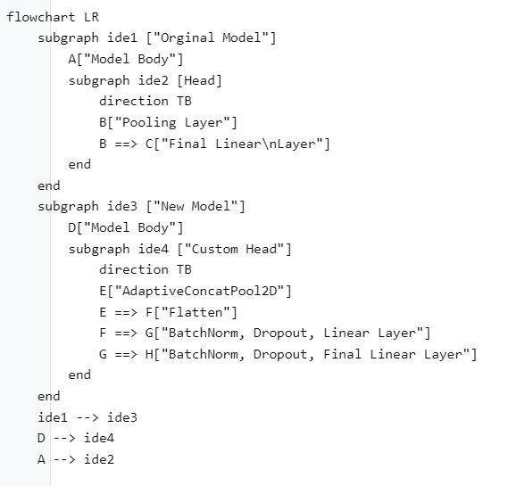
While we won’t create a custom head, we will still be performing the freezing:
list(model.children())[-1]Linear(in_features=512, out_features=37, bias=True)
Code explanation
model.children()All of a PyTorch model’s layers live in the children() generator. We can find the last layer by turning that into a list and indexing into it properly
for layer in list(model.children())[:-1]:
if hasattr(layer, "requires_grad_"):
layer.requires_grad_(False)
Why iterate over all the layers including the pooling layer?
Pooling layers have no parameters, so there is no requires_grad_ to be set.
And now the backbone of the model is frozen. We’re almost there!
Creating an Optimizer
The last step we will go over here is creating the Optimizer.
What is an optimizer?
It is the backbone of our training. It is what goes through and calculates how to update our weights relative to our loss for a particular batch.
By default fastai uses the AdamW optimizer (shown as Adam in fastai). As a result we’ll use it here:
from torch.optim import AdamWTo use a PyTorch optimizer in the fastai framework, we make use of an OptimWrapper class fastai has to convert the PyTorch optimizer into something compatible:
from functools import partial
from fastai.optimizer import OptimWrapperopt_func = partial(OptimWrapper, opt=AdamW)
Code explanation
partialA partial function is a function that has overloaded constructors, so when we call opt_func() now it will automatically have the opt parameter be set to the AdamW class.
Bringing in fastai and Training!
We have all the steps in place now to finally begin training. As mentioned previously fastai’s training magic is all within the Learner class. As a result, we will import it and any patched methods we want to use:
from fastai.losses import CrossEntropyLossFlat
from fastai.metrics import accuracy
from fastai.learner import Learner
from fastai.callback.schedule import Learner # To get `fit_one_cycle`, `lr_find`, and moreTo bring in MSELossFlat @patched functions defined in a fastai module, we can import the entire module or import the class. Both do not immediatly pollute the namespace, however the one shown here is better for code clarity
We then pass all the items we’ve written so far to the Learner:
learn = Learner(
dls,
model,
opt_func=opt_func,
loss_func=CrossEntropyLossFlat(),
metrics=accuracy
)And now we can train like normal!
learn.lr_find()SuggestedLRs(valley=0.0014454397605732083)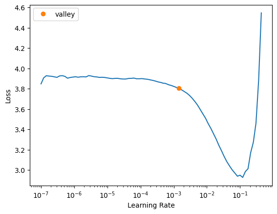
learn.fit_one_cycle(5, 1e-3)| epoch | train_loss | valid_loss | accuracy | time |
|---|---|---|---|---|
| 0 | 2.890399 | 1.713731 | 0.712449 | 03:22 |
| 1 | 1.406183 | 0.670381 | 0.860622 | 03:23 |
| 2 | 0.895859 | 0.491480 | 0.893775 | 03:22 |
| 3 | 0.749822 | 0.447594 | 0.903924 | 03:22 |
| 4 | 0.694308 | 0.435798 | 0.902571 | 03:22 |
Getting Predictions
Now that we have a trained model, how do we get predictions? First we’ll open one of our images:
im = Image.open(filenames[0])
imThen we’ll extract the trained model from the Learner
net = learn.modelApply the validation transforms onto the image:
tfm_x = valid_transforms(ToTensor()(im))
tfm_x = tfm_x.unsqueeze(0); tfm_x.shapetorch.Size([1, 3, 224, 224])
Code explanation
tfm_x = valid_transforms(ToTensor()(im)) We apply the valid_transforms to our image after converting it to a tensor
Code explanation
tfm_x = tfm_x.unsqueeze(0); tfm_x.shapeThen we need to turn it into a “batch” of one item by adding a single dimension to the front (turning it from (3, 224, 224) to (1, 3, 224, 224))
Before finally getting our prediction through raw PyTorch:
import torch
net.eval()
with torch.no_grad():
preds = net(tfm_x)
pred = preds.argmax(dim=-1)[0]
label = list(label_to_int.keys())[pred]
pred, label(tensor(0), 'birman')
Code explanation
net.eval()When performing inference, we set the model to evaluation mode. This modifies any layers that keep track of things during training and are deterministic such as BatchNorm
Code explanation
with torch.no_grad():\ preds = net(tfm_x) We wrap the prediction around torch.no_grad to skip calculating the gradients. This make inference time a bit faster and saves a bit of memory. Also the input needs to be on the right device (cuda)
Code explanation
pred = preds.argmax(dim=-1)[0]
label = list(label_to_int.keys())[pred]To get the class result, we find what index had the highest value. Since we only predicted on one value we can take the first item. And finally we can take our label_to_int dictionary from earlier and index into it to grab the true label.
Lesson 3
3.1 Multi-Label Classification
Introduction
In this lesson we will focus on dealing with multi-labelled images. In the prior edition of Walk with fastai this was done using the high level API, however in the spirit of revisited we will be doing so with the mid-level API and will continue to use it throughout the rest of this course.
This will be a vision problem so again we will import the vision library:
from fastai.vision.all import *Exploring the data
For this problem we will use the Planet dataset, a collection of satellite images with multiple labels describing the scene. First let’s download the data:
src = untar_data(URLs.PLANET_SAMPLE)
df = pd.read_csv(src/'labels.csv')
100.05% [15532032/15523994 00:01<00:00]
And then take a peek:
df.head()| image_name | tags | |
|---|---|---|
| 0 | train_21983 | partly_cloudy primary |
| 1 | train_9516 | clear cultivation primary water |
| 2 | train_12664 | haze primary |
| 3 | train_36960 | clear primary |
| 4 | train_5302 | haze primary road |
For this problem we have an image_name column and a tags column. The labels are also seperated by a space.
Similar to what we did for the Kaggle dataset, let’s look at how the labels are distributed:
all_tags = df["tags"].values
all_labels = []
for row in all_tags:
all_labels += row.split(" ")
len(all_labels)2899
Code explanation
all_tags = df["tags"].valuesThe labels are located in the “all_tags” column, and we can extract the raw values as a regular array using the .values attribute
Code explanation
all_labels = []
for row in all_tags:
all_labels += row.split(" ")Since each row’s tags are split by a space, we can turn this string into an array and add these values directly into our all_labels array. This will be a giant list that has many repeated values on purpose.
In total there are 2,899 labels, but this doesn’t tell us how many different labels there are. Let’s find out:
different_labels = set(all_labels)
len(different_labels)17Only 17! Let’s see the distribution of these labels:
counts = {
label: all_labels.count(label)
for label in different_labels
}
counts = {
key: value
for key, value in
sorted(
counts.items(),
key = lambda item: -item[1]
)
}
Code explanation
label: all_labels.count(label)Python lists contain a method called count which can take in an item and count how many times it occurs in the list.
Code explanation
counts = {
key: value
for key, value in
sorted(
counts.items(),
key = lambda item: -item[1]
) }To make our lives easier, we can sort the list by the number of instances found.
Code explanation
key = lambda item: -item[1]To make the dictionary be sorted from highest to lowest occurences, we sort by the negative of the actual value
counts{'primary': 934,
'clear': 701,
'agriculture': 318,
'road': 209,
'partly_cloudy': 194,
'water': 169,
'cultivation': 124,
'habitation': 93,
'haze': 55,
'cloudy': 50,
'bare_ground': 19,
'blooming': 9,
'selective_logging': 8,
'artisinal_mine': 7,
'slash_burn': 6,
'conventional_mine': 2,
'blow_down': 1}What we find is that selective_logging, artisinal_mine, slash_burn, conventional_mine, and blow_down had the least number of occurances. For the sake of todays lesson we will get rid of rows with these values.
Typically a Data Scientist has two choices when it comes to dealing with rare values, either leaving them in as they are or performing oversampling. We’re dropping them for convenience but normally we would want to oversample the training dataset for rare values and ensure the validation dataset has a few instances of them to test on.
Next we’ll use some pandas magic to filter our dataframe by these values:
len(df)1000for key, count in counts.items():
if count < 10:
df = df[df["tags"].str.contains(key) == False]
Code explanation
if count < 10: Since we’re limiting it based on rare values, we’ll arbitrarily get rid of classes that occur less than 10 times
Code explanation
df['tags'].strThis converts each rows item into a string and we can utilize methods inside the str class to be applied on every single row
Code explanation
.contains(key) == FalseFrom here we then look for if any of these rows have our rare class, and only keep the ones that do not.
len(df)968Despite what seemed like getting rid of quite a lot of classes, they only showed up in < 40 rows. In the real world one would want to try and get more data from these underrepresented classes if possible, or perform oversampling on them.
Next let’s take a look at one of the images:
df["image_name"].head(), src.ls()(0 train_21983
1 train_9516
2 train_12664
3 train_36960
4 train_5302
Name: image_name, dtype: object,
(#2) [Path('/home/stephen137/.fastai/data/planet_sample/labels.csv'),Path('/home/stephen137/.fastai/data/planet_sample/train')])We get a partial string of the filename, and based on looking at how the data source is setup they live in the train folder. Let’s look in there:
(src/'train').ls()[:3](#3) [Path('/home/stephen137/.fastai/data/planet_sample/train/train_34232.jpg'),Path('/home/stephen137/.fastai/data/planet_sample/train/train_37605.jpg'),Path('/home/stephen137/.fastai/data/planet_sample/train/train_18029.jpg')]Each image has the extension .jpg:
PILImage.create((src/'train'/'train_34232.jpg'))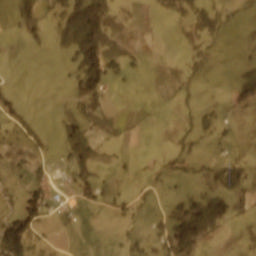
We now have enough to build ourselves a Datasets object!
Working with fastai Datasets
Next let’s build a Datasets object. Here’s what we know:
x and y
- x: Our x’s are colored images, meaning we should use PILImage
- y: Our y’s are multilabeled images, meaning we should use MultiCategorize
Getting the items
We need to write a set of getters to get each one based on looking at a single row of data
- x: Our x’s are located at src/‘train’/{fname}.jpg, so this can be written as a function that looks at the image_name column
- y: Our y’s are a split string based on the tags column, and this too can be written as a function
Why as functions?
Technically these can be written as lambda functions, such as lambda x: print(x) however lambda’s are not pickleable, meaning if you export the Learner it will give you an error of something along the lines of “Cannot pickle lambda …”. The solution is to define them as seperate functions that you pull in somewhere before importing the Learner
Splitting the data
There is no set value for what is “train” or “validation”, so we can randomly split the dataset again
Let’s build everything that was just described:
def get_x(row:pd.Series) -> Path:
return (src/'train'/row.image_name).with_suffix(".jpg")Using with_suffix on a pathlib.Path object will either replace or add the defined suffix to the last item in the path.
def get_y(row:pd.Series) -> List[str]:
return row.tags.split(" ")row = df.iloc[0]
get_x(row), get_y(row)(Path('/home/stephen137/.fastai/data/planet_sample/train/train_21983.jpg'),
['partly_cloudy', 'primary'])Now that we’ve seen how these are written, in fastai there exists a labeller we can use instead called the ColReader which takes in the index of the column and any adjustments we want to make:
get_x = ColReader(0, pref=f'{src}/train/', suff=".jpg")
get_y = ColReader(1, label_delim=" ")tfms = [
[get_x, PILImage.create],
[
get_y,
MultiCategorize(vocab=different_labels),
OneHotEncode(len(different_labels))
]
]
Code explanation
MultiCategorize(vocab=different_labels)We need to explicitly pass in the list of different class labels to use here.
Code explanation
OneHotEncode(len(different_labels))For our particular problem, just doing MultiCategorize isn’t quite enough, we also need to do OneHotEncode. This is because MultiCategorize will just turn our labels into something like 17, 22 (the index’s into the vocab), we need to turn it into [0, 0, …1, …1, …0] where each 1 represents a label present in the image. But to do so we must pass in the number of different labels present.
train_idxs, valid_idxs = (
RandomSplitter(valid_pct=0.2, seed=42)(df)
)The RandomSplitter can accept a validation percentage as well as a random seed to be set during the splitting. After instantiating the class we can then pass in any items we want to have split, such as our dataframe here.
train_idxs, valid_idxs((#775) [888,918,313,104,751,504,661,774,492,634...],
(#193) [622,943,48,152,686,547,418,768,558,863...])Now we can build the datasets object!
dsets = Datasets(df, tfms=tfms, splits=[train_idxs, valid_idxs])dsets.train[0](PILImage mode=RGB size=256x256,
TensorMultiCategory([0., 0., 0., 0., 0., 0., 0., 0., 0., 0., 1., 0., 0., 0., 0.,
0., 1.]))We now return the PILImage expected as well as our one-hot encoded labels!
show_at(dsets.train, 0);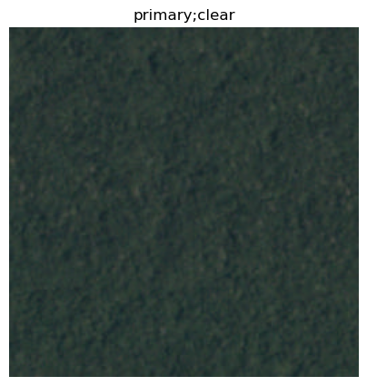
Building some DataLoaders
Lastly we need to build some DataLoaders. The fastai Datasets class has a .dataloaders() function for us to do so easily, we just need to pass in some transforms to use:
batch_tfms = [
IntToFloatTensor(),
*aug_transforms(
flip_vert=True,
max_lighting=0.1,
max_zoom=1.05,
max_warp=0.
),
Normalize.from_stats(*imagenet_stats)
]dls = dsets.dataloaders(
after_item=[ToTensor],
after_batch=batch_tfms
)You may notice that we don’t pass any Resize or other augmentation to the item transforms, just ToTensor. This is because all of the images are already 256x256, so there isn’t a need to and we can just jump to augmenting the data on the GPU.
Let’s look at a batch of data to make sure everything looks correct:
dls.show_batch()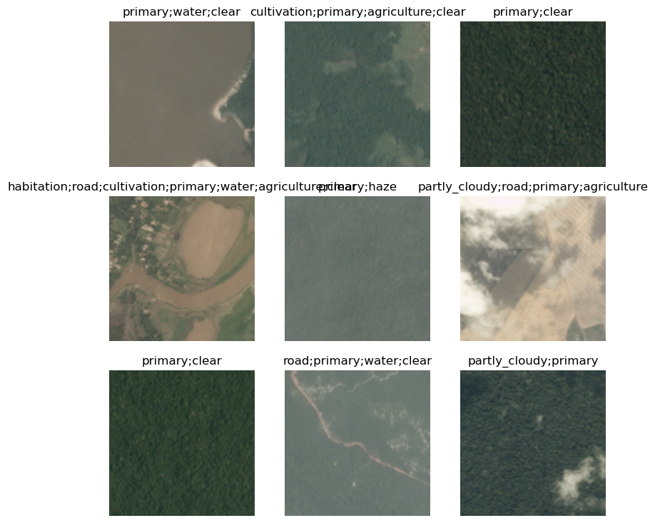
Great! Now to train a model
Training a Model
Similar to our previous problem, we will use the baseline resnet34 for this task, and since we are looking at multiple labels we will want to use the accuracy_multi metric:
learn = vision_learner(dls, resnet34, metrics=[accuracy_multi])/home/stephen137/mambaforge/lib/python3.10/site-packages/torchvision/models/_utils.py:208: UserWarning: The parameter 'pretrained' is deprecated since 0.13 and will be removed in 0.15, please use 'weights' instead.
warnings.warn(
/home/stephen137/mambaforge/lib/python3.10/site-packages/torchvision/models/_utils.py:223: UserWarning: Arguments other than a weight enum or `None` for 'weights' are deprecated since 0.13 and will be removed in 0.15. The current behavior is equivalent to passing `weights=ResNet34_Weights.IMAGENET1K_V1`. You can also use `weights=ResNet34_Weights.DEFAULT` to get the most up-to-date weights.
warnings.warn(msg)Let’s take a look at a few of the defaults fastai set for us:
learn.model[1]Sequential(
(0): AdaptiveConcatPool2d(
(ap): AdaptiveAvgPool2d(output_size=1)
(mp): AdaptiveMaxPool2d(output_size=1)
)
(1): fastai.layers.Flatten(full=False)
(2): BatchNorm1d(1024, eps=1e-05, momentum=0.1, affine=True, track_running_stats=True)
(3): Dropout(p=0.25, inplace=False)
(4): Linear(in_features=1024, out_features=512, bias=False)
(5): ReLU(inplace=True)
(6): BatchNorm1d(512, eps=1e-05, momentum=0.1, affine=True, track_running_stats=True)
(7): Dropout(p=0.5, inplace=False)
(8): Linear(in_features=512, out_features=17, bias=False)
)We can see that the head of our model is still exactly the same, since we have a total of 17 classes that can show up. So what needs to change for our multi-label problem?
learn.loss_funcFlattenedLoss of BCEWithLogitsLoss()The loss function.
The difference between normal Cross Entropy and Binary Cross Entropy with Logits is rather than performing a softmax, we instead perform what is called a sigmoid operation and use nn.BCEWithLogitsLoss instead of nn.CrossEntropyLoss:
t = tensor([[0.1, 0.5, 0.3, 0.7, 0.2]])
torch.sigmoid(t)tensor([[0.5250, 0.6225, 0.5744, 0.6682, 0.5498]])After scaling we can then also limit what is perceved as “seen” vs “not seen” through a threshold:
learn.loss_func.thresh0.5This essentially means that if there are any results that are less than 0.5 from the output of our sigmoid then we ignore them and assume they are not there.
Keeping the thresholds aligned!
It’s extremely important to remember the metric and loss function’s thresholds should be the exact same otherwise you’re looking at two different versions of the same result. E.g. while you can just change the metric’s threshold to be 0.6, the loss function will still be 0.5 so you’re not actually training with the assumption that the right answer should be > 0.6
Now that we have everything setup, let’s find a learning rate and train!
learn.lr_find()SuggestedLRs(valley=0.0020892962347716093)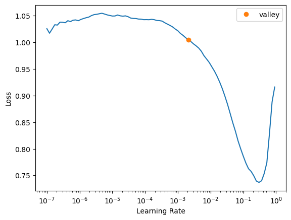
We find that 2e-3 is a pretty good learning rate, so let’s do some fine tuning!
learn.fit_one_cycle(1, slice(2e-3))| epoch | train_loss | valid_loss | accuracy_multi | time |
|---|---|---|---|---|
| 0 | 0.958438 | 0.820993 | 0.560805 | 00:54 |
Then we’ll unfreeze and train a bit more:
learn.unfreeze()
learn.fit_one_cycle(5, slice(2e-3/2.6**4, 2e-3))| epoch | train_loss | valid_loss | accuracy_multi | time |
|---|---|---|---|---|
| 0 | 0.848786 | 0.768949 | 0.575130 | 01:17 |
| 1 | 0.786721 | 0.662387 | 0.704358 | 01:17 |
| 2 | 0.712081 | 0.484378 | 0.804023 | 01:18 |
| 3 | 0.643590 | 0.420974 | 0.874429 | 01:18 |
| 4 | 0.593340 | 0.394490 | 0.900335 | 01:16 |
This lr/2.6**4 is a general rule of thumb that Jeremy Howard found works quite well when doing gradual unfreezing, see the ULMFiT notebook to see it in practice!
And now let’s look at our results:
learn.show_results(figsize=(15,15))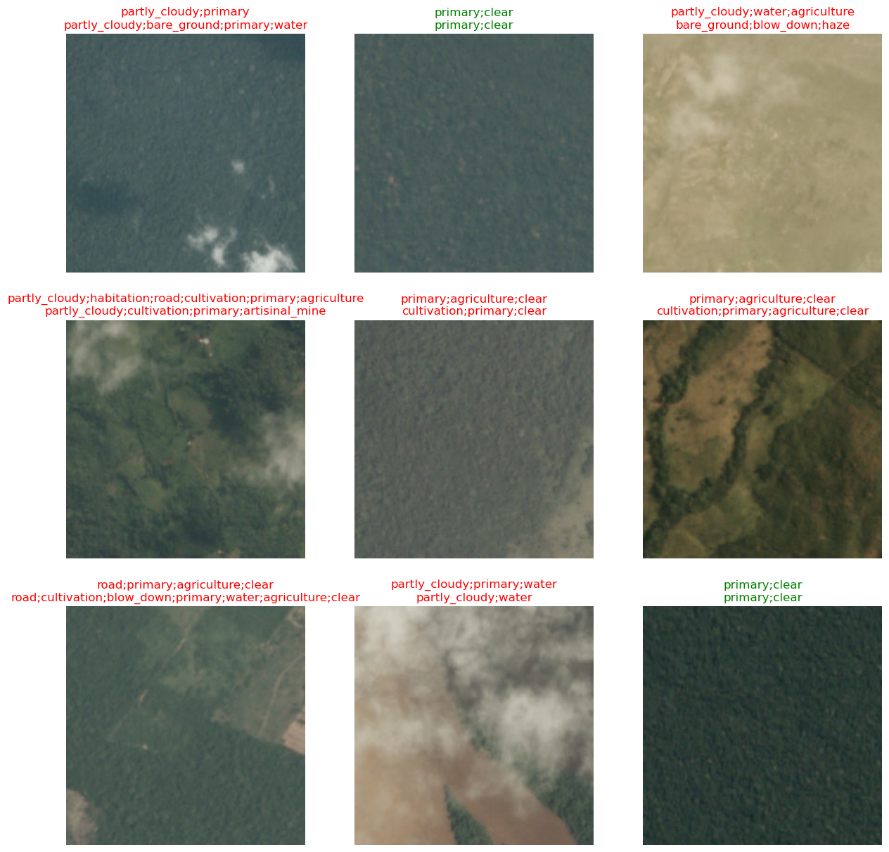
Predictions in the wild
While we’ve looked at how to train, let’s look at how to predict and get back our answers without using the fastai API.
model = learn.model
fname = get_x(df.iloc[0])First, the item transforms:
im = Image.open(fname)
im = im.convert("RGB")
t_im = tensor(im)
t_im = t_im.permute(2,0,1).type(torch.uint8)
Code explanation
im = Image.open(fname)
im = im.convert("RGB")First we will open the file using Pillow and convert it to an RGB image
im = Image.open(fname)
im = im.convert("RGB")
Code explanation
t_im = tensor(im)
t_im = t_im.permute(2,0,1)Then we need to convert it to a tensor and turn the image into something PyTorch would expect, so the channel order needs to be one of CxWxH while it is currently WxHxC.
Code explanation
.type(torch.uint8)Finally we convert it into an int tensor
Then the batch transforms:
t_im = t_im.unsqueeze(0)
t_im = t_im.float().div_(255.)
Code explanation
t_im = t_im.unsqueeze(0)First we turn the single image into a batch of 1
t_im = t_im.float().div_(255.)
Code explanation
t_im = t_im.float().div_(255.)Then we turn the tensor into a float and divide it by 255 as pixel values range from 0-256.
mean, std = (
[0.485, 0.456, 0.406],
[0.229, 0.224, 0.225]
)
vector = [1]*4
vector[1] = -1
mean = tensor(mean).view(*vector)
std = tensor(std).view(*vector)
Code explanation
mean, std = (
[0.485, 0.456, 0.406],
[0.229, 0.224, 0.225]
)First we need the mean and standard deviation of ImageNet
vector = [1]*4
vector[1] = -1
Code explanation
vector = [1]*4
vector[1] = -1Then we create a vector of how these two sets of three numbers should be formatted so that a matrix multiplication between the image and the setting can be performed
Code explanation
mean = tensor(mean).view(*vector)
std = tensor(std).view(*vector)Finally we apply these two formats to the tensors and return them
mean.shape, std.shape(torch.Size([1, 3, 1, 1]), torch.Size([1, 3, 1, 1]))And now we can normalize the data!
t_im = (t_im - mean) / stdt_im.shapetorch.Size([1, 3, 256, 256])Now all that’s left is to get our predictions:
with torch.inference_mode():
model.eval()
preds = model(t_im)We use inference_mode here instead of no_grad as *inference_mode is a more powerful version of no_grad. Find out more in the docs
preds.shapetorch.Size([1, 17])Now that we have our predictions, we need to perform the sigmoid operation, find the limit, and grab the ones present:
decoded_preds = torch.sigmoid(preds) > 0.5decoded_predsTensorBase([[False, False, True, False, False, False, False, False, False,
False, False, False, False, False, False, False, False]])from itertools import compresspresent_labels = list(compress(
data=list(different_labels), selectors=decoded_preds[0]
))
Code explanation
compress(
data=list(different_labels), selectors=decoded_preds[0]
)The compress function creates an iterator that filters elements based on some boolean array, which is what our decoded_preds are originally. We can use this to find what labels are actually present!
present_labels['cloudy']And now we’ve successfully done what fastai does during predictions end-to-end:
learn.predict(fname)[0](#2) ['partly_cloudy','cloudy']Here’s the code again for a quick copy-paste:
im = Image.open(fname)
im = im.convert("RGB")
t_im = tensor(im)
t_im = t_im.permute(2,0,1).type(torch.uint8)
mean, std = (
[0.485, 0.456, 0.406],
[0.229, 0.224, 0.225]
)
vector = [1]*4
vector[1] = -1
mean = tensor(mean).view(*vector)
std = tensor(std).view(*vector)
t_im = (t_im - mean) / std
with torch.inference_mode():
model.eval()
preds = model(t_im)
decoded_preds = torch.sigmoid(preds) > 0.5
present_labels = list(compress(
data=list(different_labels), selectors=decoded_preds[0]
))present_labels ['partly_cloudy',
'habitation',
'cloudy',
'selective_logging',
'blooming',
'road',
'cultivation',
'bare_ground',
'water',
'agriculture']3.2 Recognizing Unknown Images, or the Unknown Label Problem
Introduction
So far we’ve seen applications where you have a single image on a label and multiple images on a label. This lesson will be a mixture of the two as we try to address a real-world problem:
- if a machine learning model has n outputs and is designed to tell that there will always be one correct answer, what do you do if an image has no right answer?
Let’s imagine a scenario where we trained a dog and cat classifier. What would happen if we gave it a picture of a bird? The raw probabilities out of the model would still sum to 1 for dog or cat, and if we took the argmax it would return either dog or cat, even though it’s neither! So, what can we do?
Fake it till you make it, turn single label to multilabel
The answer is through using multi-label classification. The way it worked in our previous lesson is Binary Cross Entropy (BCE) would find and return the probability that any of the n labels were present and we converted this to a boolean tensor from 0-n. This also means that we could have a tensor of size n where every answer is False, meaning no recognizable classes are there!
This is exactly what we will perform today. First let’s import fastai and download the PETs dataset again:
from fastai.vision.all import *path = untar_data(URLs.PETS)/'images'Next we’ll bring back our code we used originally to create our DataBlock:
fnames = get_image_files(path/'images')
pat = r'(.+)_\d+.jpg$'
item_tfms = RandomResizedCrop(460, min_scale=0.75, ratio=(1.,1.))
batch_tfms = [*aug_transforms(size=224, max_warp=0), Normalize.from_stats(*imagenet_stats)]
bs=64pets = DataBlock(blocks=(ImageBlock, CategoryBlock),
get_items=get_image_files,
splitter=RandomSplitter(),
get_y=RegexLabeller(pat = r'/([^/]+)_\d+.*'),
item_tfms=item_tfms,
batch_tfms=batch_tfms)Now currently it’s setup for our single-label classification again. So how do we turn this into multilable? We instead use the MultiCategoryBlock and add in a simple function that converts our label into a list of labels (or a list of a single label) for us to use:
def label_to_list(o): return [o]Then we’ll pass this along into our new DataBlock:
multi_pets = DataBlock(
blocks=(ImageBlock, MultiCategoryBlock),
get_items=get_image_files,
splitter=RandomSplitter(),
get_y=Pipeline(
[RegexLabeller(pat = r'/([^/]+)_\d+.*'), label_to_list]
),
item_tfms=item_tfms,
batch_tfms=batch_tfms
)When using the DataBlock API and you have a sequence of items the get_y should follow, these must be wrapped in a Pipeline class to work.
And we can create some new DataLoaders:
dls = multi_pets.dataloaders(path, bs=32)dls.show_batch()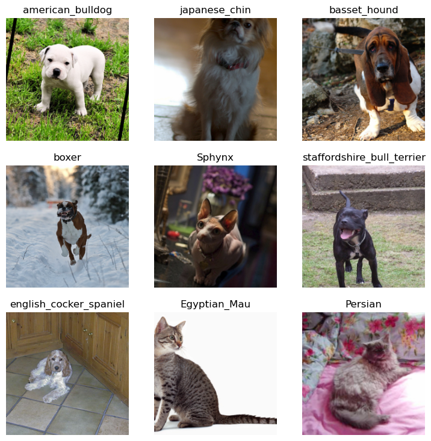
Now overall these don’t look that different right? This is because each label is still a single label. What we’ve really changed here is how vision_learner will read in our DataLoaders object and understand what to do with the outputs.
Let’s recreate what we’ve just done here as Datasets as well to understand what the API change would be:
train_idxs, valid_idxs = RandomSplitter()(get_image_files(path))tfms = [
[PILImage.create],
[
RegexLabeller(pat = r'/([^/]+)_\d+.*'),
label_to_list,
MultiCategorize(vocab=list(dls.vocab)),
OneHotEncode(len(dls.vocab))
]
]dsets = Datasets(get_image_files(path), tfms=tfms, splits=[train_idxs, valid_idxs])dsets[0](PILImage mode=RGB size=500x358,
TensorMultiCategory([0., 0., 1., 0., 0., 0., 0., 0., 0., 0., 0., 0., 0., 0., 0.,
0., 0., 0., 0., 0., 0., 0., 0., 0., 0., 0., 0., 0., 0., 0.,
0., 0., 0., 0., 0., 0., 0.]))
Indexes
Notice here that there is only one index that contains a 1 value in our label, which corresponds to our original label after its been encoded
Then we’ll create some DataLoaders:
dls = dsets.dataloaders(
after_item=[ToTensor(), RandomResizedCrop(460, min_scale=.75)],
after_batch=[IntToFloatTensor(), *aug_transforms(size=224, max_warp=0), Normalize.from_stats(*imagenet_stats)],
bs=32
)And we can verify it still looks the same:
dls.show_batch()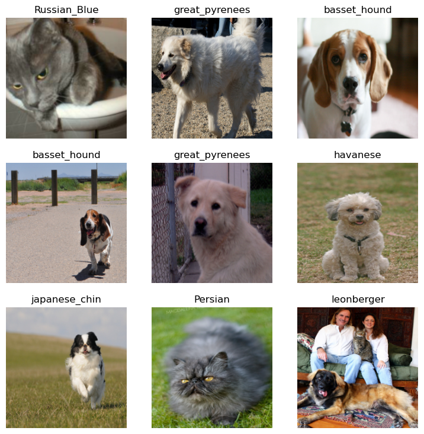
Great! Now we can train our model
Train the model!
Next we’ll train the model deviating ever so slightly to the previous lesson’s advice, with an important reason:
learn = vision_learner(dls, resnet34, metrics=[partial(accuracy_multi, thresh=0.95)])/home/stephen137/mambaforge/lib/python3.10/site-packages/torchvision/models/_utils.py:208: UserWarning: The parameter 'pretrained' is deprecated since 0.13 and will be removed in 0.15, please use 'weights' instead.
warnings.warn(
/home/stephen137/mambaforge/lib/python3.10/site-packages/torchvision/models/_utils.py:223: UserWarning: Arguments other than a weight enum or `None` for 'weights' are deprecated since 0.13 and will be removed in 0.15. The current behavior is equivalent to passing `weights=ResNet34_Weights.IMAGENET1K_V1`. You can also use `weights=ResNet34_Weights.DEFAULT` to get the most up-to-date weights.
warnings.warn(msg)
Why do we suddenly use a metric thresh that is different to our loss function threshold?
This is because when we deploy the model we will make sure that it’s set to 0.95, but during training we don’t want to bias the model towards extreme predictions.
learn.fine_tune(4, 2e-3)| epoch | train_loss | valid_loss | accuracy_multi | time |
|---|---|---|---|---|
| 0 | 0.419639 | 0.068303 | 0.974015 | 05:15 |
| epoch | train_loss | valid_loss | accuracy_multi | time |
|---|---|---|---|---|
| 0 | 0.052954 | 0.021808 | 0.981805 | 07:44 |
| 1 | 0.027599 | 0.013009 | 0.989668 | 07:39 |
| 2 | 0.016222 | 0.010937 | 0.992357 | 07:43 |
| 3 | 0.010513 | 0.009358 | 0.993417 | 07:39 |
Model Evaluation
All that’s left is to make sure our model doesn’t know the difference between a donkey and some dogs or cats! To do so (and so our exported Learner knows what we’re doing), let’s manually change the loss function’s threshold to be what we want:
learn.loss_func.thresh = 0.95Then we can try predicting on an image from one of our classes:
PERSIAN_CAT_URL = "https://azure.wgp-cdn.co.uk/app-yourcat/posts/iStock-174776419-1.jpg"response = requests.get(PERSIAN_CAT_URL)
im = PILImage.create(response.content)im.show();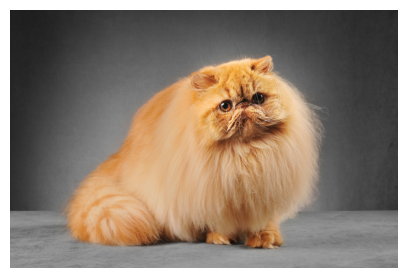
learn.predict(im)[0](#1) ['Persian']We can see it only returned one label. What happens if we try a donkey?
I chose a donkey here because it’s an animal very unlike a cat or a dog, but try your own image! To learn more about this sort of idea, look up the “Hotdog, not hotdog” problem
KOMODO_URL = "https://i.natgeofe.com/k/c02b35d2-bfd7-4ed9-aad4-8e25627cd481/komodo-dragon-head-on_3x2.jpg"
response = requests.get(KOMODO_URL)
learn.predict(response.content)[0](#0) []
Code explanation
response = requests.get(KOMODO_URL)
learn.predict(response.content)[0] predict knows how to work with a large variety of data, including the raw bytes that get returned from requests.
We successfully didn’t find a cat or dog! You can follow the same steps as shown in the previous notebook from this lesson to get these predictions without the use of fastai, it still has the exact same pipeline!
3.3 Cross Validation and Ensembling
What is Cross Validation?
Typically we have one model that sees the entire training dataset and is evaluated on some test set at the end. Model ensembling works a bit differently. Instead each model of n folds is trained on a subset of the data. After the training is completed all of the models outputs are averaged and we take this as the overall prediction.
This technique is known as a Voting Ensemble where each model gets an equal “vote” towards the correct answer.
Generally this results in a set of models that can generalize better as a whole and has been seen to perform much better on unseen data in Kaggle competitions.
That being said, the computational requirements as a result are significantly higher as well as how long it takes for you to actually iterate over the results.
Let’s begin
For this problem yet again we’ll utilize the PETs dataset since we’re intimitely familiar with various levels of the API and how it’s written. First we’ll import the library:
::: {.column-margin} This will be especially important as we will need to use the Datasets level of the API to do this efficiently. ::
from fastai.vision.all import *
from sklearn.model_selection import StratifiedKFold
from sklearn.model_selection import StratifiedKFold
The particular type of K-Fold validation we’ll be performing is called Stratified K-Fold, which ensures that the distributions between all of the classes remains the same across all k folds.
Next we’ll bring in our dataset and setup our transforms like before:
path = untar_data(URLs.PETS)
fnames = get_image_files(path/'images')
pat = r'(.+)_\d+.jpg$'
item_tfms = [RandomResizedCrop(460, min_scale=0.75, ratio=(1.,1.)), ToTensor()]
batch_tfms = [IntToFloatTensor(), *aug_transforms(size=224, max_warp=0), Normalize.from_stats(*imagenet_stats)]
batch_size = 64This time we will utilize the IndexSplitter that fastai provides as our K-Fold will result in a list of indices representing our validation set.
K-Fold Validation and Data Subsets
When performing K-Fold validation we turn 2 subsets of data (train and validation) into three: train, validation, and test.
The test set should never be graded (validated) upon until the very end of the entire training and should have no impact on how we grade if intermediate models are training well.
The validation sets are then smaller subsets of the training dataset, such that if we had a k of 10 each validation set would be a unique 10% of the data.
Creating the splits
Let’s set aside our train/validation and test sets:
random.shuffle(fnames)
train_fnames = [filename for filename in fnames[:int(len(fnames) * .9)]]
test_fnames = [filename for filename in fnames[int(len(fnames) * .9):]]
Code explanation
random.shuffle(fnames)In order to efficiently randomly select from the data we can just shuffle our list of filenames inplace and then choose from that.
::: {.callout-note}
## Code explanation
int(len(fnames) * .9)
For this example we’ll make our test set be 10% of the data, randomly.
:::We then need to actually create our K-Fold splits. To do so first let’s extract all of the labels from our dataset:
vocab = list(map(RegexLabeller(pat=r'/([^/]+)_\d+.*'), train_fnames))pipe = Pipeline([
RegexLabeller(pat=r'/([^/]+)_\d+.*'), Categorize(vocab=vocab)
])
Code explanation
Pipeline([ExampleClassA(), ExampleClassB()])This is the basic Pipeline class which controls how transforms are applied (read more about this below)
Code explanation
RegexLabeller(pat=r'/([^/]+)_\d+.*'), CategorizeSimilar to what we saw earlier, we can create a Pipeline of only the transforms that will extract and encode the label from a filename.
Code explanation
pipe.setup(train_fnames)Some transforms require certain setups to be performed, such as how Categorize knows the class list. This is done by calling pipe.setup and passing in a list of items for it to utilize
What is a Pipeline?
A Pipeline class is what fastai uses under the hood to call each set of transforms. It’s similar to PyTorch’s Compose we saw earlier except we can also control the transform behavior. For example, this is how fastai will either do random cropping or center cropping based on if we should apply the transforms to the training dataset or the validation dataset.
When going through a Pipeline it will call the call function of a class or just call the normal function, hence why the previous code example used ExampleClassA() as it’s assumed if we have tfm = ExampleClassA() we can then do: tfm(some_input)
labels = list(map(pipe, train_fnames))This let’s us apply the pipeline we just created onto every single fname in train_fnames and return that as a list rather than having to write a for loop.
Code explanation
list(map(function, items))The map function will return a generator where upon iterating it will apply a single function to an item from items. We can use list to instantly run that generator to its end and return all their results.
Now that we have the labels we can create the folds. For this example we will split the dataset into 10 subsets:
splits = []
skf = StratifiedKFold(n_splits=10, shuffle=True)
for _, valid_indexes in skf.split(
np.zeros(len(labels)), labels
):
split = IndexSplitter(valid_indexes)
splits.append(split)
Code explanation
splits = []All of our splits across the five validation folds will be stored into an array
Code explanation
skf = StratifiedKFold(n_splits=10, shuffle=True)This will instantiate our KFold class and specify the number of splits to use and that each classes indicies should be shuffled before they’re distributed between each of the splits
Code explanation
np.zeros(len(labels)), labelsThe skf.split function needs to take in a list of X and a list of y. It’s possible to just make the X’s a list of numbers instead, which is what we’re doing here
Code explanation
skf.split(np.zeros(len(labels)), labels) The split function is what will actually take our labels find their distributions and return an iterator for each of our specified subsets
Code explanation
for _, valid_indexes in The split’s iterator returns two sets of X and label indicies. Since we only care about the labels we just keep them
Code explanation
split = IndexSplitter(valid_indexes)
splits.append(split)We then use the IndexSplitter class from fastai which will split between train and validation based on a set of indicies passed in (these will be the validation indicies). From there we store them in an array of splitters
Now that we have our splits we can create a training loop!
The Training Loop
valid_pcts = []
test_preds = []And now create a train function which will take in a splitter, create a learner, and train:
def train(splitter:IndexSplitter):
"Trains a single model over a set of splits based on `splitter`"
dset = Datasets(
train_fnames,
tfms = [
[PILImage.create],
[RegexLabeller(pat=r'/([^/]+)_\d+.*'), Categorize]
],
splits = splitter(train_fnames)
)
dls = dset.dataloaders(
bs=batch_size,
after_item=item_tfms,
after_batch=batch_tfms
)
learn = vision_learner(dls, resnet34, metrics=accuracy)
learn.fit_one_cycle(1)
valid_pcts.append(learn.validate()[1])
dl = learn.dls.test_dl(test_fnames)
preds, _ = learn.get_preds(dl=dl)
test_preds.append(preds)
Code explanation
dset = Datasets(
train_fnames,
tfms = [
[PILImage.create],
[RegexLabeller(pat=r'/([^/]+)_\d+.*'), Categorize]
],
splits = splitter(train_fnames)
)This will create a dataset based on all of our training filenames and apply the passed in splitter from earlier to define our splits
Code explanation
learn = vision_learner(dls, resnet34, metrics=accuracy) We create a model here and initialize it (and a Learner in this case), and attach accuracy to the Learner’s metrics.
Code explanation
learn.fit_one_cycle(1)Then we perform whatever training we want to perform over each split. In this case since it’s just an example the model is trained for a single epoch using the One Cycle policy
Code explanation
valid_pcts.append(learn.validate()[1])Then we take the validation metric for that model and store it away in the valid_pcts array. learn.get_preds will return in the following order: loss, metrics, and then other more-specific items if desired
Code explanation
dl = learn.dls.test_dl(test_fnames)
preds, _ = learn.get_preds(dl=dl)Afterwards we perform inference by creating a test dataloader on the final hold-out dataset. This new dl is designed to apply the validation augmentation when a new batch is called.
Code explanation
test_preds.append(preds)Finally we store those new predictions in the array defined earlier.
for splitter in splits:
train(splitter)| epoch | train_loss | valid_loss | accuracy | time |
|---|---|---|---|---|
| 0 | 1.151564 | 0.392927 | 0.878378 | 05:05 |
| epoch | train_loss | valid_loss | accuracy | time |
|---|---|---|---|---|
| 0 | 1.160626 | 0.322556 | 0.896241 | 05:05 |
| epoch | train_loss | valid_loss | accuracy | time |
|---|---|---|---|---|
| 0 | 1.177824 | 0.346940 | 0.890226 | 05:10 |
| epoch | train_loss | valid_loss | accuracy | time |
|---|---|---|---|---|
| 0 | 1.127279 | 0.407724 | 0.879699 | 05:23 |
| epoch | train_loss | valid_loss | accuracy | time |
|---|---|---|---|---|
| 0 | 1.181068 | 0.367682 | 0.867669 | 05:34 |
| epoch | train_loss | valid_loss | accuracy | time |
|---|---|---|---|---|
| 0 | 1.168471 | 0.350968 | 0.900752 | 05:06 |
| epoch | train_loss | valid_loss | accuracy | time |
|---|---|---|---|---|
| 0 | 1.186819 | 0.367836 | 0.884211 | 05:04 |
| epoch | train_loss | valid_loss | accuracy | time |
|---|---|---|---|---|
| 0 | 1.205666 | 0.327377 | 0.906767 | 05:07 |
| epoch | train_loss | valid_loss | accuracy | time |
|---|---|---|---|---|
| 0 | 1.149422 | 0.387929 | 0.887218 | 05:06 |
| epoch | train_loss | valid_loss | accuracy | time |
|---|---|---|---|---|
| 0 | 1.206261 | 0.324390 | 0.906767 | 05:07 |
Performing the Ensemble
Currently we just have a set of predictions and some amount of models trained, we need a way to actually perform the ensembling (through equal voting) as mentioned earlier. Since the term equal is in there, it can be inferred that we take the average across all of the different models and use that prediction as the result.
First let’s check the accuracy of one fold:
test_labels = torch.stack([pipe(fname) for fname in test_fnames])
accuracy(test_preds[0], test_labels)TensorBase(0.8809)Then we can get the results for all of them to see their distribution:
for preds in test_preds:
print(accuracy(preds, test_labels))TensorBase(0.8809)
TensorBase(0.8917)
TensorBase(0.8714)
TensorBase(0.8674)
TensorBase(0.8823)
TensorBase(0.8999)
TensorBase(0.8823)
TensorBase(0.8945)
TensorBase(0.8836)
TensorBase(0.8687)The highest is 89.99%, and the lowest was 87.14% How will the ensemble do?
Finally we can perform our vote:
votes = torch.stack(test_preds, dim=-1).sum(-1) / 10And see our new accuracy:
accuracy(votes, test_labels)TensorBase(0.9066)We can see that ensembling worked well here and our results improved!
So, should we just shove even more folds into the mix to get a better model?
Ensembling in this way has diminishing returns, so finding the right number of folds is a trial and error hyperparameter. Also people will typically combine multiple different models when doing these folds so that there is an even starker variation to the data and some models that perform better on certain data can shine and improve the rest.
Lesson 4
4.1 Semantic Segmentation and the Unet
What is Semantic Segmentation?
Given a particular image, we can assume that each pixel inside that image represents a class.
This can come in the form (most commonly) of:
- Binary: either it is or is not (such as background v.s. an object)
- Multiclass: one of n number of classes (such as parts of the body)
In the Practical Deep Learning for Coders course it was the latter shown through the CAMVID problem. In this course we will focus on the binary segmentation aspect as sometimes it takes a bit of preprocessing to get it going well.
The other option would be when individual pixels represent multiple classes, though I haven’t seen too many of these cases personally.
from fastai.vision.all import *The Dataset
The dataset for today will be portraits of people. Let’s download it first:
gdown
Make sure to run pip install gdown first, as the dataset is hosted on Google Drive!
! pip install gdown
url = "https://drive.google.com/uc?id=18xM3jU2dSp1DiDqEM6PVXattNMZvsX4z"Requirement already satisfied: gdown in /home/stephen137/mambaforge/lib/python3.10/site-packages (4.6.0)
Requirement already satisfied: beautifulsoup4 in /home/stephen137/mambaforge/lib/python3.10/site-packages (from gdown) (4.11.1)
Requirement already satisfied: tqdm in /home/stephen137/mambaforge/lib/python3.10/site-packages (from gdown) (4.64.1)
Requirement already satisfied: six in /home/stephen137/mambaforge/lib/python3.10/site-packages (from gdown) (1.16.0)
Requirement already satisfied: filelock in /home/stephen137/mambaforge/lib/python3.10/site-packages (from gdown) (3.8.0)
Requirement already satisfied: requests[socks] in /home/stephen137/mambaforge/lib/python3.10/site-packages (from gdown) (2.28.1)
Requirement already satisfied: soupsieve>1.2 in /home/stephen137/mambaforge/lib/python3.10/site-packages (from beautifulsoup4->gdown) (2.3.2.post1)
Requirement already satisfied: urllib3<1.27,>=1.21.1 in /home/stephen137/mambaforge/lib/python3.10/site-packages (from requests[socks]->gdown) (1.26.11)
Requirement already satisfied: idna<4,>=2.5 in /home/stephen137/mambaforge/lib/python3.10/site-packages (from requests[socks]->gdown) (3.3)
Requirement already satisfied: certifi>=2017.4.17 in /home/stephen137/mambaforge/lib/python3.10/site-packages (from requests[socks]->gdown) (2022.12.7)
Requirement already satisfied: charset-normalizer<3,>=2 in /home/stephen137/mambaforge/lib/python3.10/site-packages (from requests[socks]->gdown) (2.1.1)
Requirement already satisfied: PySocks!=1.5.7,>=1.5.6 in /home/stephen137/mambaforge/lib/python3.10/site-packages (from requests[socks]->gdown) (1.7.1)!gdown {url}Downloading...
From: https://drive.google.com/uc?id=18xM3jU2dSp1DiDqEM6PVXattNMZvsX4z
To: /home/stephen137/Blog/posts/Walk_with_fastai/Portrait.zip
100%|████████████████████████████████████████| 107M/107M [00:04<00:00, 25.8MB/s]When working in Jupyter Notebooks you can utilize variables named earlier when calling bash commands by surrounding them with {}
The data has now been stored in a Portrait.zip file. Let’s use the zipfile library to unzip it to a data folder:
from zipfile import ZipFile
with ZipFile("data/Portrait.zip", "r") as zip_ref:
zip_ref.extractall("../data")What’s inside?
path = Path("../data")for walk in path.ls():
print(repr(walk), walk.is_file())Path('../data/EG1800_val.txt') True
Path('../data/GT_png') False
Path('../data/images_data_crop') False
Path('../data/val.txt') True
Path('../data/EG1800_train.txt') True
Path('../data/train.txt') TrueYou can see that we have some files relating to image labels, filenames that relate to whether an image is in the train or validation set, and two other text files we won’t worry about.
Checking the Labels
Why check the labels next? Let’s grab one and take a look:
(path/"GT_png").ls()[0]Path('../data/GT_png/02227_mask.png')mask = Image.open((path/"GT_png").ls()[0])maskIn semantic segmentation, the “labels” are a 1:1 mask of the original picture with each pixel representing a label and are single channel:
mask = np.asarray(mask); maskarray([[ 0, 0, 0, ..., 0, 0, 0],
[ 0, 0, 0, ..., 0, 0, 0],
[ 0, 0, 0, ..., 0, 0, 0],
...,
[255, 255, 255, ..., 255, 255, 255],
[255, 255, 255, ..., 255, 255, 255],
[255, 255, 255, ..., 255, 255, 255]], dtype=uint8)Very quickly we see the issue!
Segmentation Masks and Their Values
Because of how the loss gets calculated (and how fastai does things in general), the values of the pixel mask must be from 0 -> n, with n being the number of classes possible. If we take things as they are here during training you’ll hit an error that says “CUDA Segmentation Fault, Index Out of Bounds” (or something similar).
This is because our labels should be from 0 -> 1, to align with the fact predicted probabilities from our model are 0 -> 1. Instead they are between 0 and 255(the brightness intensity of each pixel), leading to this issue.
So how do we fix the issue? In NumPy we can just override the numbers for a particular value in the array and set it. To generalize this however a dictionary of the original value to the new one should also be made; this mapping ensures a trail is retained.
def get_codes(fnames) -> Dict[int,int]:
"Returns a dictionary of `original_code:new_code` for pixel values in segmentation masks"
unique_codes = set()
for fname in fnames:
mask = Image.open(fname)
mask = np.asarray(mask)
for color in np.unique(mask):
unique_codes.add(color)
return {
i : color
for i, color in
enumerate(unique_codes)
}
Code explanation
def get_codes(fnames) -> Dict[int,int]: The function will take in a list of filenames and return a dictionary of int:int
Code explanation
unique_codes = set()The unique pixel values found in each mask will be stored in a set called unique_codes. This is because a set let’s us add items to the object but will only be included if they do not already exist inside it.
Code explanation
mask = Image.open(fname)
mask = np.asarray(mask)We need to open each mask and convert it to a NumPy array
Code explanation
for color in np.unique(mask):
unique_codes.add(color) np.unique will find all the different pixel values present in our mask and return them as an array. We need to then add each of them to our set to see what ones exist.
Code explanation
return {
i : color
for i, color in
enumerate(unique_codes)
} Finally, we can construct a dictionary from 0 to n that says what the pixel to color translation will be.
unique_codes = get_codes((path/"GT_png").ls()[:20])
unique_codes{0: 0, 1: 255}Changing the values inside our masks afterwards looks something like so:
mask = mask.copy()
np.place(mask, mask==255, 1)
np.unique(mask)array([0, 1], dtype=uint8)
Code explanation
mask = mask.copy() NumPy will raise a WRITEBACKIFCOPY issue if we try to modify the original array in-place, so we make another one instead.
Code explanation
np.place(mask, mask==255, 1) np.place takes in an array, a mask, and values to replace them with. In this case the “mask” here means what values need changing.
We’ll need to perform this when we do our get_y
Building the Dataloaders
First step is to build a DataBlock (the Datasets will be shown afterwards). Our input is an Image and our output is a Mask, so thus:
codes = ["Background", "Face"]
blocks = (ImageBlock, MaskBlock(codes=codes))Codes are how fastai knows the human label for each image, so that when decoding the final output it isn’t an array of [0,1,0,…] but instead [Background, Face, Background,…]
Next we need to create a get_y function. In this case it should take in a filename and our dictionary, open the filename, and return the mask:
def get_y(filename:Path, unique_codes:dict):
"Grabs a mask from `filename` and adjusts the pixel values based on `unique_codes`"
filename = path/"GT_png"/f'{filename.stem}_mask.png'
mask = np.asarray(Image.open(filename)).copy()
for new_value, old_value in unique_codes.items():
np.place(mask, mask==old_value, new_value)
return PILMask.create(mask)
Code explanation
filename = path/"GT_png"/f'{filename.stem}_mask.png'We need to grab the label relative to our x filename. It’s located under GT_png/{filename}_mask.png. .stem is used to extract everything prior to the extension.
Code explanation
mask = np.asarray(Image.open(filename)).copy()Next similar to earlier we open the mask and convert it to a NumPy array.
Code explanation
for new_value, old_value in unique_codes.items():
np.place(mask, mask==old_value, new_value)Then we replace all of the old values with the new ones.
Code explanation
return PILMask.create(mask)Finally returning a fully created PILMask ready for fastai.
Now let’s test out if it works by calling the PILMask.show() function and passing in a color map to use:
new_mask = get_y((path/"images_data_crop").ls()[0], unique_codes)
new_mask.show(cmap="Blues");cmap relates to matplotlib and how they render colors for numerical values. Find out more here
DataBlock
We have a mask! Now everything is in place to build our DataBlock:
block = DataBlock(
blocks=blocks,
splitter=RandomSplitter(),
get_y=partial(get_y, unique_codes=unique_codes),
item_tfms=Resize(224),
batch_tfms=[*aug_transforms(), Normalize.from_stats(*imagenet_stats)]
)dls = block.dataloaders(
get_image_files(path/'images_data_crop'),
bs=8
)
Use a small batch size
The architecture we will use for training (and UNet’s in general) are resource hungry, and we’re expecting a very large output so the batch sizes will need to be quite small.
dls.show_batch(cmap="Blues", vmin=0, vmax=1)With Datasets
splitter = RandomSplitter()
dsets = Datasets(
get_image_files(path/'images_data_crop'),
tfms=[
[PILImage.create],
[partial(get_y, unique_codes=unique_codes)]
],
splits = splitter(get_image_files(path/'images_data_crop'))
)dls = dsets.dataloaders(
after_item = [
Resize(224),
ToTensor(),
AddMaskCodes(codes=codes)
],
after_batch = [
*aug_transforms(),
IntToFloatTensor(),
Normalize.from_stats(*imagenet_stats)
],
bs=8
)AddMaskCodes will inject that list of classes into the metadata of the ending TensorMask that is created. fastai will then use this data later when decoding all their values.
dls.show_batch(cmap="Blues", vmin=0, vmax=1)With that we’re ready for training!
The U-Net
When it comes to image segmentation, the model of choice with fastai is the Dynamic Unet.

Within the above U-Net architecture you can see how the data gets compressed then uncompressed as it goes back out. You may have seen places where the Unet is already being used, such as in Stable Diffusion. (We’re not going to talk about that here, feel free to go watch Jeremy’s course to learn more about that once it’s out!)
I highly recommend this video explaining how the UNet works!
Here’s the basic premise though. We take in these pixeled images of some size and shrink it down in half each time (encoding). Eventually it becomes a representation of some shape, in this case a matrix of 1024x30x30 (CxWxH). Afterwards we blow the image back up to it’s original size again (decoding) and create a segmentation map of size NxWxH where N is the number of classes, and W ,H are the original width and height of the image when it was passed in.
Each channel in this final segmentation map represents all the values for a particular class as a result.
In fastai there is a special Learner function to create this model, unet_learner. There’s a variety of configurations we can pass to the unet, which you can read more about here however in my opinion the default configurations will get us by just fine.
The only two options we will be enabling are self attention layers (think EfficientNet or ViT) and changing the activation function to Mish, a popular alternative to Rectified Linear Unit (ReLU)
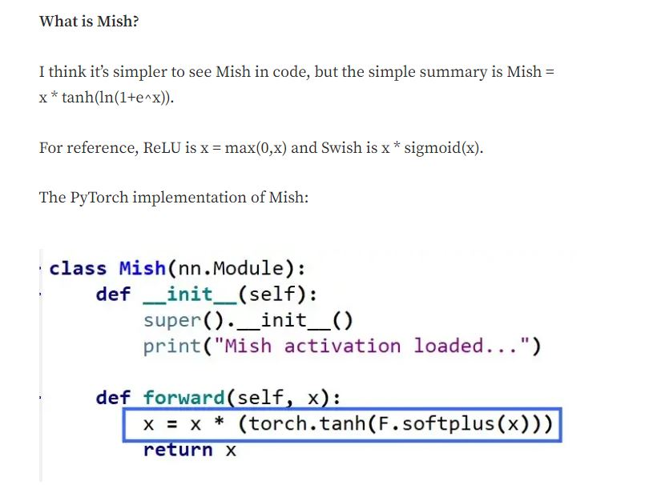
learn = unet_learner(
dls,
resnet34,
metrics=accuracy,
self_attention=True,
act_cls=Mish,
loss_func = CrossEntropyLossFlat(axis=1)
)learn.summary()DynamicUnet (Input shape: 8 x 3 x 224 x 224)
============================================================================
Layer (type) Output Shape Param # Trainable
============================================================================
8 x 64 x 112 x 112
Conv2d 9408 False
BatchNorm2d 128 True
ReLU
____________________________________________________________________________
8 x 64 x 56 x 56
MaxPool2d
Conv2d 36864 False
BatchNorm2d 128 True
ReLU
Conv2d 36864 False
BatchNorm2d 128 True
Conv2d 36864 False
BatchNorm2d 128 True
ReLU
Conv2d 36864 False
BatchNorm2d 128 True
Conv2d 36864 False
BatchNorm2d 128 True
ReLU
Conv2d 36864 False
BatchNorm2d 128 True
____________________________________________________________________________
8 x 128 x 28 x 28
Conv2d 73728 False
BatchNorm2d 256 True
ReLU
Conv2d 147456 False
BatchNorm2d 256 True
Conv2d 8192 False
BatchNorm2d 256 True
Conv2d 147456 False
BatchNorm2d 256 True
ReLU
Conv2d 147456 False
BatchNorm2d 256 True
Conv2d 147456 False
BatchNorm2d 256 True
ReLU
Conv2d 147456 False
BatchNorm2d 256 True
Conv2d 147456 False
BatchNorm2d 256 True
ReLU
Conv2d 147456 False
BatchNorm2d 256 True
____________________________________________________________________________
8 x 256 x 14 x 14
Conv2d 294912 False
BatchNorm2d 512 True
ReLU
Conv2d 589824 False
BatchNorm2d 512 True
Conv2d 32768 False
BatchNorm2d 512 True
Conv2d 589824 False
BatchNorm2d 512 True
ReLU
Conv2d 589824 False
BatchNorm2d 512 True
Conv2d 589824 False
BatchNorm2d 512 True
ReLU
Conv2d 589824 False
BatchNorm2d 512 True
Conv2d 589824 False
BatchNorm2d 512 True
ReLU
Conv2d 589824 False
BatchNorm2d 512 True
Conv2d 589824 False
BatchNorm2d 512 True
ReLU
Conv2d 589824 False
BatchNorm2d 512 True
Conv2d 589824 False
BatchNorm2d 512 True
ReLU
Conv2d 589824 False
BatchNorm2d 512 True
____________________________________________________________________________
8 x 512 x 7 x 7
Conv2d 1179648 False
BatchNorm2d 1024 True
ReLU
Conv2d 2359296 False
BatchNorm2d 1024 True
Conv2d 131072 False
BatchNorm2d 1024 True
Conv2d 2359296 False
BatchNorm2d 1024 True
ReLU
Conv2d 2359296 False
BatchNorm2d 1024 True
Conv2d 2359296 False
BatchNorm2d 1024 True
ReLU
Conv2d 2359296 False
BatchNorm2d 1024 True
BatchNorm2d 1024 True
ReLU
____________________________________________________________________________
8 x 1024 x 7 x 7
Conv2d 4719616 True
Mish
____________________________________________________________________________
8 x 512 x 7 x 7
Conv2d 4719104 True
Mish
____________________________________________________________________________
8 x 1024 x 7 x 7
Conv2d 525312 True
Mish
____________________________________________________________________________
8 x 256 x 14 x 14
PixelShuffle
BatchNorm2d 512 True
Conv2d 2359808 True
Mish
Conv2d 2359808 True
Mish
Mish
____________________________________________________________________________
8 x 1024 x 14 x 14
Conv2d 525312 True
Mish
____________________________________________________________________________
8 x 256 x 28 x 28
PixelShuffle
BatchNorm2d 256 True
Conv2d 1327488 True
Mish
Conv2d 1327488 True
Mish
____________________________________________________________________________
8 x 48 x 784
Conv1d 18432 True
Conv1d 18432 True
Conv1d 147456 True
Mish
____________________________________________________________________________
8 x 768 x 28 x 28
Conv2d 295680 True
Mish
____________________________________________________________________________
8 x 192 x 56 x 56
PixelShuffle
BatchNorm2d 128 True
Conv2d 590080 True
Mish
Conv2d 590080 True
Mish
Mish
____________________________________________________________________________
8 x 512 x 56 x 56
Conv2d 131584 True
Mish
____________________________________________________________________________
8 x 128 x 112 x 112
PixelShuffle
BatchNorm2d 128 True
____________________________________________________________________________
8 x 96 x 112 x 112
Conv2d 165984 True
Mish
Conv2d 83040 True
Mish
Mish
____________________________________________________________________________
8 x 384 x 112 x 112
Conv2d 37248 True
Mish
____________________________________________________________________________
8 x 96 x 224 x 224
PixelShuffle
ResizeToOrig
____________________________________________________________________________
8 x 99 x 224 x 224
MergeLayer
Conv2d 88308 True
Mish
Conv2d 88308 True
Sequential
Mish
____________________________________________________________________________
8 x 2 x 224 x 224
Conv2d 200 True
ToTensorBase
____________________________________________________________________________
Total params: 41,405,488
Total trainable params: 20,137,840
Total non-trainable params: 21,267,648
Optimizer used: <function Adam at 0x7f2741cf6680>
Loss function: FlattenedLoss of CrossEntropyLoss()
Model frozen up to parameter group #2
Callbacks:
- TrainEvalCallback
- CastToTensor
- Recorder
- ProgressCallbackYou can see this change in shape visually in the architecture summary.
Otherwise training looks just as straightforward as before. Train our frozen backbone for a while: